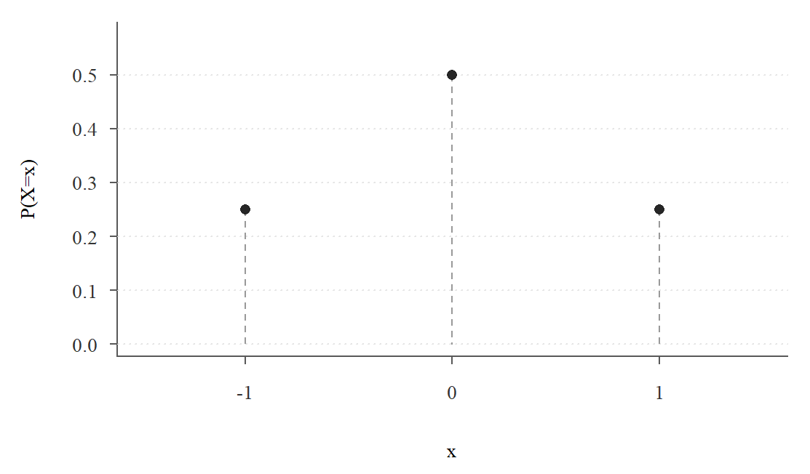
8 Kesikli Rassal Değişkenler
\[ \renewcommand{\E}{\mathbb{E}} \renewcommand{\P}{\mathbb{P}} \renewcommand{\Var}{\mbox{Var}} \renewcommand{\Cov}{\mbox{Cov}} \renewcommand{\plim}{\operatornamewithlimits{plim}} \renewcommand{\cd}{\overset{d}{\longrightarrow}} \renewcommand{\cp}{\overset{p}{\longrightarrow}} \renewcommand{\adistr}{\stackrel{a}{\sim}} \renewcommand{\ind}{1\hspace{-2.5mm}{1}} \]
Bu bölümün amacı.
- Rassal değişken kavramını öğrenmek, kesikli ve sürekli rassal değişken ayrımını anlamak
- Kesikli bir rassal değişkenin olasılık kütle ve birikimli dağılım fonksiyonunu kurmak
- Beklenen değeri ve varyansı hesaplamak, işlemci özelliklerini kullanmak
- Bernoulli, binom, hipergeometrik ve Poisson dağılımlarını tanımak ve aralarındaki ilişkileri görmek
- Momentleri, çarpıklık ve basıklık katsayılarını bir dağılımdan hesaplamak
Bilimsel araştırmalarda değişkenler incelenen birimlerin farklı yönlerine ilişkin bilgi içerirler. Değişken, bir araştırma ya da deneyde ölçülen/gözlemlenen herhangi bir nitelik veya nicelik olarak düşünülebilir. Değişkenleri alacağı değerlerin kesin olarak bilinip bilinmemesine göre deterministik ve rassal olmak üzere ikiye ayırabiliriz. Deterministik değişkenler alacağı değerlere ilişkin belirsizlik içermezler. Aynı girdi kümesiyle aynı sonuçların elde edileceği kesindir. Rassal ya da stokastik değişkenlerin ise alacağı değerler önceden kesin olarak bilinemez, ancak olasılıklı olarak tanımlanabilirler.
Tanım 8.1 (Rassal Değişken) Alacağı değer bir rassal denemenin ya da sürecin sonucuna bağlı olan değişkenlere rassal (stokastik, tesadüfi, rastlantısal) değişken (r.d.) denir. Bir rassal değişkenin alacağı değer önceden kesin olarak bilinemez.
Rassal değişkenleri \(X\), \(Y\), \(Z\), \(W\) gibi büyük harflerle, ve bunların aldığı belirli değerleri ise \(x\), \(y\), \(z\), \(w\) gibi küçük harflerle göstereceğiz.
Rassal değişkenler matematiksel özelliklerine göre kesikli ve sürekli olmak üzere ikiye ayrılır. Bir kesikli rassal değişkenin aldığı değerler sayılabilir ya da listelenebilirdir. Kesikli rassal değişken \(X\)’in alacağı değerler sonlu ya da sonsuz olabilir. Örneğin, iki zar atımında üste gelen sayıların toplamı, belli bir üretim bandında bir çalışanın yaptığı hata sayısı, bir bankaya 15 dk içinde gelen müşteri sayısı, bir hanede yaşayan kişi sayısı kesikli rassal değişkenlerdir.
Sürekli rassal değişkenler ise belirli bir aralıkta (genellikle reel sayılar doğrusu üzerinde) herhangi bir değeri alabilir ve bu değerler sayılamaz. Örneğin, bir şehirdeki hanehalklarının harcanabilir geliri, belli bir dönemdeki enflasyon oranı, borsa endeksinin günlük kapanış değeri, bir yılda yapılan toplam ihracat tutarı sürekli rassal değişkenlerdir.
Bu bölümde kesikli rassal değişkenlerin dağılımlarının nasıl betimlenip yorumlanacağını öğreneceğiz. Sürekli rassal değişkenleri bir sonraki bölümde ele alacağız (bkz. Bölüm 9).
8.1 Kesikli Rassal Değişkenlerin Dağılımları
Kesikli rassal değişkenler sayılabilir olduğu için her bir değere karşılık gelen gerçekleşme olasılıkları hesaplanabilir. Bunun için olasılık kütle fonksiyonu ve birikimli dağılım fonksiyonu kullanılır.
8.1.1 Olasılık kütle fonksiyonu
Tanım 8.2 (Olasılık Kütle Fonksiyonu) \(X\) kesikli rassal değişkeninin olasılık kütle fonksiyonu belirli bir \(x\) değerinin gerçekleşme olasılığını gösterir. \(X\)’in alabileceği değerler sayılabilir olduğu için bunu bir tablo ya da fonksiyon olarak ifade edebiliriz. Olasılık kütle fonksiyonunu \(f(x)\) ya da \(\P(X=x)\) ile göstereceğiz.
\[ f(x)\equiv \P(X=x)=\P(X\mbox{'in belirli bir}~ x ~\mbox{değerine eşit olması}) \tag{8.1}\]
Bu fonksiyonun aşağıdaki iki özelliği sağlaması gerekir:
\[ 1.\quad f(x)\geq 0, \tag{8.2}\]
\[ 2.\quad \sum_x f(x)=1, \tag{8.3}\]
Birinci özelliğe göre olasılık kütle fonksiyonu negatif değerler alamaz. İkinci özellik ise olasılık toplamlarının 1 olmasını gerektirir. Bu toplam \(x\)’in alabileceği tüm değerler üzerinedir ve listelenmiş \(x_i\) değerleri için \[ \sum_i \P(X=x_i)=1,~~~i=1,2,3,\ldots \tag{8.4}\] olarak tanımlanabilir.
Bir kesikli rassal değişkenin alabileceği değerler az sayıda ise olasılık kütle fonksiyonu bir tablo ile gösterilebilir. Örneğin \(X\)’in aldığı değerler \(-1,0,1\) ve bunların olasılıkları, sırasıyla, \(0.25,0.5,0.25\) ise olasılık kütle fonksiyonu \[ \begin{array}{c|ccc} x & -1 & 0 & 1 \\ \hline f(x)=\P(X=x) & 0.25 & 0.5 & 0.25 \\ \end{array} \tag{8.5}\] biçiminde yazılabilir.
Şekil 8.1 bu olasılık kütle fonksiyonunun grafiğini göstermektedir. \(f(x)=\P(X=x)\) fonksiyonunun sadece belirli \(x\) değerlerinde tanımlı olduğuna ve noktaların birleştirilmediğine dikkat ediniz.
8.1.2 Birikimli dağılım fonksiyonu
\(X\) kesikli rassal değişkeninin dağılımını betimlemenin bir yolu, bu rassal değişkenin belirli bir değere eşit ya da küçük olma olasılıklarının hesaplanmasıdır. Birikimli dağılım fonksiyonu bu olasılıkları verir.
Tanım 8.3 (Birikimli Dağılım Fonksiyonu) \(X\) kesikli rassal değişkeninin birikimli dağılım fonksiyonu (bdf), \(X\)’in belli bir \(x\) değerini aşmamasının olasılığını verir:
\[ F(x) = \P(X\leq x) = \sum_{t\leq x} f(t) \]
\(F(x)\), \(x\)’in azalmayan bir fonksiyonudur ve 0 ile 1 arasında değerler alır. Kesikli rassal değişkenler için \(F(x)\) bir basamak fonksiyonudur.
Denklem 8.5’de olasılık kütle fonksiyonu verilen kesikli rassal değişkenin birikimli dağılım fonksiyonunu bulalım. Bunun için \(X\)’in alabileceği değerleri, birbiriyle örtüşmeyen alt aralıklara bölebiliriz. İlk olarak, \(X\)’in en küçük değeri olan \(-1\)’den küçük bütün \(x\) değerleri için \[ F(x)=\P(X\leq x)=0, \quad x<-1 \] olur. Bu rassal değişkenin tanımı gereği \(-1\)’den küçük değerler gerçekleşemez.
\(-1\leq x<0\) aralığında \(X\leq x\) olayı yalnızca \(X=-1\) ile gerçekleşir. Bu nedenle bu aralıktaki her \(x\) için \(F(x)=F(-1)\) ve
\[\begin{eqnarray} F(-1) &=& \P(X\leq -1) \\ &=& \P(X=-1) \\ &=& 0.25 \end{eqnarray}\]
olur. İzleyen aralıkta, \(0\leq x<1\), \(X\leq x\) olayı \(X=-1\) ya da \(X=0\) ile gerçekleşir; öyleyse bu aralıkta \(F(x)=F(0)\) ve
\[\begin{eqnarray} F(0) &=& \P(X\leq 0) \\ &=& \P(X=-1) + \P(X = 0) \\ &=& 0.25 + 0.50 \\ &=& 0.75 \end{eqnarray}\]
olur. \(X=1\) ve daha büyük değerler için ise
\[\begin{eqnarray} F(1) &=& \P(X\leq 1) \\ &=& \P(X=-1) + \P(X = 0) + \P(X = 1) \\ &=& 0.25 + 0.50 + 0.25 \\ &=& 1 \end{eqnarray}\]
olacaktır. Yani, \(X\)’in tanımı gereği 1 ya da daha küçük bir değerin gerçekleşme olasılığı 1’dir. Bu kesikli rassal değişkenin birikimli dağılım fonksiyonunu daha kompakt bir şekilde aşağıdaki gibi yazabiliriz:
\[ F(x)=\P(X\leq x)=\left\{ \begin{array}{ll} 0, & x<-1; \\ 0.25, & -1\leq x<0; \\ 0.75, & 0\leq x<1;\\ 1, & x\geq 1. \\ \end{array}% \right. \tag{8.6}\]
Şekil 8.2 bu birikimli dağılım fonksiyonunun (Denklem 8.6) grafiğini göstermektedir. \(F(x)\) yalnızca \(X\)’in aldığı \(-1\), \(0\) ve \(1\) değerlerinde sıçrar ve sıçramanın büyüklüğü o değerin olasılığına eşittir. İki değer arasında \(F(x)\) sabit kalır ve grafikte yatay bir çizgiyle gösterilir. Her yatay çizginin sol ucundaki dolu nokta, o noktanın bu basamağa ait olduğunu gösterir; örneğin \(F(-1)=0.25\) olur. Sağ uçtaki boş nokta ise o noktanın bu basamağa ait olmadığını gösterir: \(x\) sıfıra ne kadar yaklaşırsa yaklaşsın \(F(x)=0.25\) kalır, ama \(x=0\) noktasında fonksiyon \(F(0)=0.75\) değerine sıçrar. En büyük değer olan 1’den itibaren \(F(x)=1\) olur, çünkü olasılıkların toplamı 1’dir.
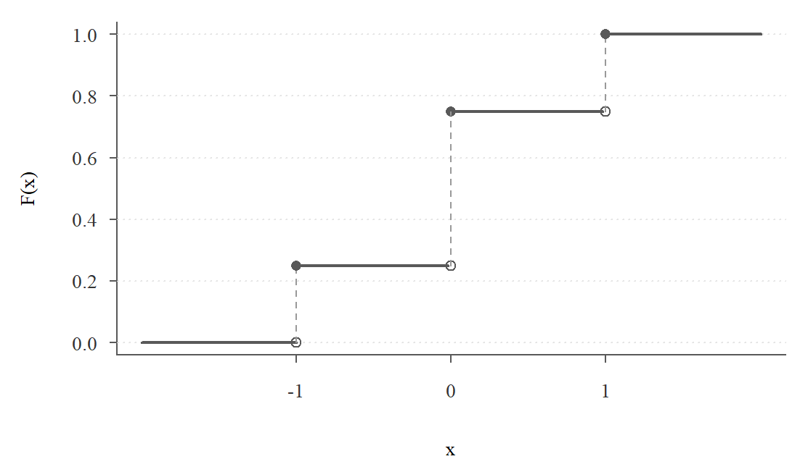
Bir kesikli rassal değişkenin birikimli dağılım fonksiyonundan hareketle olasılık kütle fonksiyonuna ulaşabiliriz. Bunun için birikimli olasılıkların farkını almamız yeterli olacaktır. \(x_{i-1}\) ve \(x_{i}\) birbirini izleyen iki değer olmak üzere \[ \P(X=x_i) = F(x_i)-F(x_{i-1}) \] olduğu görülebilir. Örneğin \(-1,0,1\) değerlerinde tanımlı \(X\) rassal değişkeni için \(F(-1)=0.25\), \(F(0)=0.75\) ve \(F(1)=1\) olduğunu biliyoruz. Buradan hareketle
\[ \P(X=-1)=F(-1)-0=0.25 \] \[ \P(X=0)=F(0)-F(-1)=0.75-0.25=0.5 \] ve \[ \P(X=1)=F(1)-F(0)=1-0.75=0.25 \] olasılık kütle fonksiyonuna ulaşılır.
Örnek 8.1 3 madeni para atılıyor ve tura (T) gelme sayısı \(X\) ile gösteriliyor. \(X\) rassal değişkeninin olasılık kütle fonksiyonunu ve birikimli dağılım fonksiyonunu bulalım.
Öncelikle örneklem uzayını oluşturalım. Bu deneyde ortaya çıkabilecek sonuçlar şunlardır: \[ S=\{TTT, ~TTY, ~TYT, ~YTT, ~YYT, ~TYY, ~YTY, ~YYY\} \] Bu 8 sonuç karşılıklı olarak bağdaşmazdır ve her birinin gelme olasılığı aynıdır: 1/8. \(X\)’in alabileceği değerler 0, 1, 2, ve 3 olacaktır. Tablo 8.1 örneklem uzayı ile rassal değişkenin aldığı değerleri ilişkilendirmektedir.
| Sonuçlar | \(X\) (Tura sayısı) | Olasılık | \(f(x)=\P(X=x)\) |
|---|---|---|---|
| YYY | 0 | 1/8 | 1/8 |
| YYT | 1 | 1/8 | |
| YTY | 1 | 1/8 | 3/8 |
| TYY | 1 | 1/8 | |
| YTT | 2 | 1/8 | |
| TYT | 2 | 1/8 | 3/8 |
| TTY | 2 | 1/8 | |
| TTT | 3 | 1/8 | 1/8 |
Buna göre hiç Tura gelmemesi, yani \(YYY\) sonucu, sadece bir şekilde oluşabilir. Öyleyse \[ f(0)=\P(X=0)=\frac{1}{8} \] olur. Bir Tura gelmesi, yani \(X=1\) değerini alması üç farklı şekilde ortaya çıkabilir: \(YYT\), \(YTY\), ve \(TYY\). \(\P(X=1)\) olasılığı bu üç temel sonucun olasılıklarının toplamı olacaktır: \[ f(1) = \P(X=1) = \frac{3}{8} \] Benzer şekilde \[ f(2)=\P(X=2)=\frac{3}{8} \] ve \[ f(3)=\P(X=3)=\frac{1}{8} \] olduğu gösterilebilir.
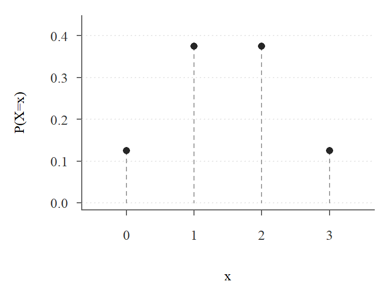
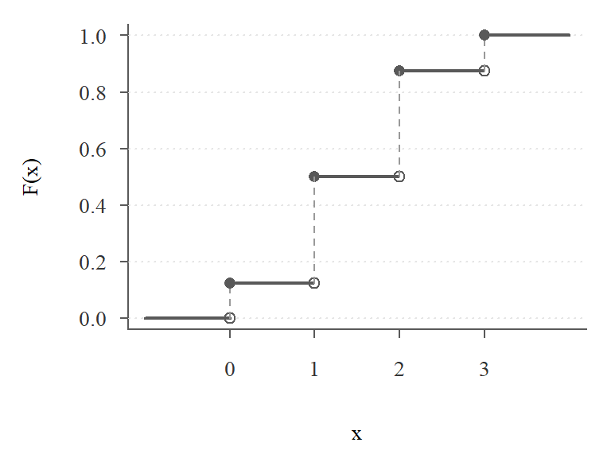
Buradan hareketle \(X\)’in olasılık kütle fonksiyonu \[ \begin{array}{c|cccc} x & 0 & 1 & 2 & 3 \\ \hline f(x)=\P(X=x) & \frac{1}{8} & \frac{3}{8} & \frac{3}{8} & \frac{1}{8} \\ \end{array} \tag{8.7}\]
olarak yazılabilir.
\(X\)’in birikimli dağılım fonksiyonu \[ F(x)=\P(X\leq x)=\left\{% \begin{array}{ll} 0, & x<0; \\ \frac{1}{8}, & 0\leq x<1; \\ \frac{1}{2}, & 1\leq x<2;\\ \frac{7}{8}, & 2\leq x<3; \\ 1, & x\geq 3. \\ \end{array}% \right. \] olur. Şekil 8.3 \(X\) rassal değişkeninin birikimli dağılım fonksiyonunu göstermektedir. Bu bdf kullanılarak aşağıdaki gibi olasılıklar hesaplanabilir: \[ \P(X\leq1)=F(1)=0.5 \]
\[ \P(1\leq X\leq3) = \P(X=1)+\P(X=2)+\P(X=3)=7/8 \] \[ \P(1\leq X\leq3) = F(3)-F(0) = 1-1/8=7/8 \]
Örnek 8.2 (Kesikli tekdüze (uniform) dağılım) Bir torbada üzerinde 0’dan 9’a kadar rakamların olduğu 10 top olduğunu düşünelim. Torbadan rassal olarak bir top çekildiğinde her rakamın çekilme olasılığı aynıdır. \(X\) çekilen rakamı göstermek üzere bu rassal değişken için olasılık kütle fonksiyonu \[ \P(X=x) = \frac{1}{10},\quad x=0,1,2,\ldots,9 \] birikimli dağılım fonksiyonu ise
\[ F(x)=\P(X\leq x)= \begin{cases} 0, & x < 0, \\ \frac{\lfloor x \rfloor + 1}{10}, & 0 \leq x < 9, \\ 1, & x \geq 9. \end{cases} \] olarak yazılabilir. Burada \(\lfloor x \rfloor\), \(x\)’ten büyük olmayan en büyük tam sayıyı gösterir. Örneğin \(F(2.5)=F(2)=0.3\) olur, çünkü \(X\) 2 ile 3 arasında bir değer alamaz. Şekil 8.4 bu rassal değişkenin olasılık kütle ve birikimli dağılım fonksiyonlarını göstermektedir.
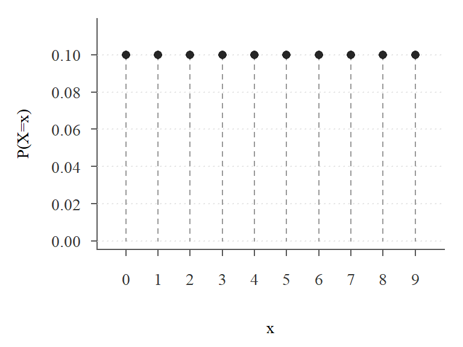
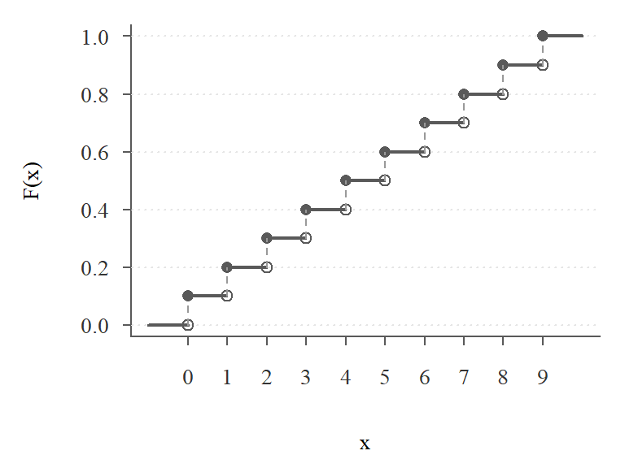
Daha genel olarak \([a,~b ]\) aralığında tanımlı tüm tamsayıların gerçekleşme olasılığı aynı ise bu dağılıma kesikli tekdüze (uniform) adı verilir. Olasılık kütle fonksiyonu \[ \P(X=x)=\frac{1}{b-a+1},\quad x=a,a+1,a+2,\ldots,b \tag{8.8}\] ve birikimli dağılım fonksiyonu \[ F(x)=\P(X\leq x)= \begin{cases} 0, & x < a~\text{; } \\ \frac{\lfloor x \rfloor - a + 1}{b - a + 1}, & a \leq x < b~\text{; } \\ 1, & x \geq b. \end{cases} \tag{8.9}\] olur.
8.2 Beklenen Değer
Tanım 8.4 (Beklenen Değer) Kesikli r. d. \(X\)’in beklenen değeri \[ \E(X) = \sum_x x\cdot f(x), \tag{8.10}\] şeklinde tanımlanır. \(\E(X)\), yani \(X\)’in beklenen değeri, anakütle dağılımının merkezine ilişkin bilgi içerir ve anakütle ortalaması olarak yorumlanır: \(\E(X)=\mu_X\).
Daha genel olarak \(\E(\cdot)\) matematiksel işlemcisini, olasılık kütle fonksiyonunda verilen olasılıklarla ağırlıklandırılmış toplama işlemi olarak düşünebiliriz. Kesikli rassal değişkenler için bu basit olarak tüm değerlere karşılık gelen olasılıkların çarpılıp toplanmasıyla bulunabilir.
Örnek 8.3 Örnek 8.1’de olasılık kütle fonksiyonu aşağıdaki gibi bulunmuştu: \[ \begin{array}{c|cccc} x & 0 & 1 & 2 & 3 \\ \hline f(x)=\P(X=x) & \frac{1}{8} & \frac{3}{8} & \frac{3}{8} & \frac{1}{8} \\ \end{array} \]
\(X\)’in beklenen değerini bulalım:
\[\begin{eqnarray} \E(X) &=& \sum_x x\cdot f(x) \\ &=& 0\cdot \frac{1}{8}+1\cdot \frac{3}{8} + 2\cdot \frac{3}{8}+3\cdot \frac{1}{8} \\ &=& \frac{3}{2} \end{eqnarray}\]
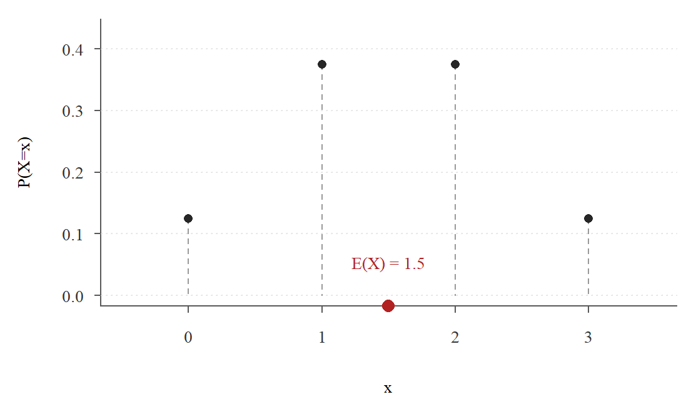
Beklenen değeri \(X\) rassal değişkeninin olasılık dağılımının merkezi olarak düşünebiliriz (bkz. Şekil 8.5).
Tanım 8.5 (\(X\)’in fonksiyonunun beklenen değeri) \(g(X)\), \(X\)’in bir fonksiyonu olsun. \(g(X)\)’in beklenen değeri \[ \E\left[ g(X) \right] = \sum_x g(x) \cdot f(x), \tag{8.11}\] ile bulunur. Toplama işlemi \(X\)’in tüm değerleri üzerine tanımlıdır.
Örnek 8.4 Örnek 8.1’deki olasılık kütle fonksiyonuna sahip \(X\) rassal değişkeninin beklenen değerini \(\E(X)=1.5\) olarak bulmuştuk. Şimdi \(X\)’in karesinin beklenen değerini bulalım.
\(g(x)=x^2\) olarak tanımlıdır. Beklenen değer: \[ \E\left( X^2 \right)=0 \times \frac{1}{8}+1\times \frac{3}{8} + 4\times \frac{3}{8}+9\times \frac{1}{8}=3 \]
\(g(X)\) doğrusal ya da doğrusal olmayan bir forma sahip olabilir. Genel olarak, \(a\) ve \(b\) sabit sayılar olmak üzere \(g(X)=a+bX\) biçimindeki doğrusal dönüştürmeler için \[ \E[g(X) ] = \E[a+bX ] = a+b\E(X) \] yazılabilir.
Ancak \(g(X)\) doğrusal olmayan bir fonksiyonsa genellikle \[ \E[g(X)]\neq g(E(X)) \] olur. Yani, doğrusal olmayan fonksiyonların beklenen değerini, bu fonksiyonu ortalamada değerleyerek bulamayız. Örneğin \(g(x)=\log(x)\) ve \(g(x)=x^2\) olarak tanımlı fonksiyonlar için \[ \E[\log(X)] \neq \log(\E(X)) \] \[ \E(X^2)\neq [\E(X)]^2 \] olduğu gösterilebilir.
Örnek 8.5 Önceki örnekte \(\E(X)=\mu=1.5\) ve \(\E(X^2)=3\) olduğunu göstermiştik. Öyleyse, \[ \E\left( X^2 \right)=3\neq \E\left( X \right)^2 = 2.25 \] yazabiliriz.
8.2.1 Beklenti işlemcisinin özellikleri
Rassal değişken ister kesikli isterse sürekli olsun, beklenti işlemcisi aşağıdaki özellikleri sağlar.
Sabitin beklentisi. \(c\) bir sabit sayı ise beklenen değeri kendisine eşit olur. \[ \E(c)=c \]
Doğrusallık. \(a\) ve \(b\) sabit sayılar olmak üzere \(Y=aX+b\) biçiminde tanımlı doğrusal bir fonksiyonun beklenen değeri \[ \E(Y) = \E(aX + b) = a \E(X) + b \] olur.
Toplamın beklentisi. \(X\) ve \(Y\) iki rassal değişken ise bunların toplamının beklenen değeri \[ \E(X + Y) = \E(X) + \E(Y) \] olur. Daha genel olarak \(X_1,X_2,\ldots,X_n\) bir rassal değişkenler dizisiyse bunların toplamının beklenen değeri \[ \E\left( \sum_{i=1}^n X_i \right) = \E(X_1)+\E(X_2)+\ldots+\E(X_n) \] beklenen değerlerinin toplamıdır.
Ağırlıklı toplamın beklentisi. Önceki özelliği ağırlıklı toplamlar için de yazabiliriz. \(w_1,w_2,\ldots,w_n\) her bir rassal değişkenin ağırlığı olsun. Ağırlıklı toplamın beklenen değeri \[ \E\left( \sum_{i=1}^n w_i~X_i \right) = \sum_{i=1}^n w_i~\E\left(X_i \right) = w_1\E(X_1) + w_2\E(X_2)+ \ldots + w_n\E(X_n) \] ile bulunur.
Örnek 8.6 İnşaat işleriyle uğraşan bir firma girmek istediği bir ihale için maliyet hesabı yapıyor. Maliyetler 1000 TL’lik birimlerle ölçülüyor. Sabit maliyetlerin 1000 birim, işçilik maliyetinin ise ayda 320 birim olacağı tahmin ediliyor. Böylece \(X\) işin tamamlanma süresi (ay cinsinden) olmak üzere toplam maliyet \[ Y=1000 + 320 X \] olarak yazılabilir. \(X\)’in dağılımının aşağıdaki gibi verildiğini düşünelim: \[ \begin{array}{c|ccccc} x & 1 & 2 & 3 & 4 & 5\\ \hline f(x)=\P(X=x) & 0.1 & 0.25 & 0.35 & 0.2 & 0.1 \\ \end{array} \] Toplam maliyetin beklenen değerini bulun.
Çözüm
Önce \(X\)’in beklentisini bulalım: \[ \E(X) = \sum_x x\cdot f(x)=1(0.1)+2(0.25)+3(0.35)+4(0.2)+5(0.1)=2.95 \] Buradan, beklenen değerin özelliklerinden hareketle toplam maliyetin beklenen değeri \[ \E(Y) = \E(1000+320X) = 1000+320\cdot\E(X)=1944 \] birim, yani 1944000 TL olur.
8.3 Varyans
Matematiksel beklenti \(\E(X)\)’in, \(X\) rassal değişkeninin anakütle dağılımındaki ortalamayı gösterdiğini öğrendik. Bu merkez çevresindeki değişkenliği, \(\Var(X)\) ya da \(\sigma^2\) ile gösterdiğimiz anakütle varyansı ile ölçebiliriz. Bunu örneklem varyansı ile karıştırmamamız gerekir. Anakütle varyansı dağılımın ne kadar yayık olduğuna ilişkin bir parametredir. Tanım gereği, anakütle dağılımının bir özelliğini gösteren parametreler sabit sayılardır ve rassallık içermezler. Örneklem varyansı ise, pratikte anakütle varyansının bilinmediği durumlarda tahmin amacıyla kullandığımız bir istatistiktir. Bir örneklemden hareketle hesaplanan istatistikler veriye bağlı olduğu için rassal değişkenlerdir. Farklı ölçüm ve örneklemeler sonucunda değişebilirler.
Tanım 8.6 (Varyans) Bir rassal değişkenin varyansı, anakütle dağılımında ortalama çevresindeki değişkenliği ölçer. \(X\)’in beklenen değerinden farkının karesinin beklenen değeri olarak tanımlanır: \[ \Var(X) = \E\left[\left(X-\E(X)\right)^2\right] \equiv \sigma_X^2 \tag{8.12}\]
Kesikli rassal değişken \(X\)’in ortalaması \(\E(X)=\mu\) ise varyansı aşağıdaki formülden hareketle bulabiliriz: \[ \Var(X) \equiv \sigma^2 = \sum_x (x-\mu)^2\cdot f(x) \tag{8.13}\] Bu toplam \(x\)’in tüm değerleri üzerinedir.
Matematiksel beklenti işlemcisini kullanarak varyansın kısa yol formülünü elde edebiliriz:
\[\begin{eqnarray} \nonumber \Var(X) &=& \E\left[\left(X-\E(X)\right)^2\right] \\ \nonumber &=& \E\left[(X^2-2X\E(X)+(\E(X))^2)\right] \\ \nonumber &=& \E\left(X^2\right)-2\E\left(X\E(X)\right)+\E\left((\E(X))^2\right) \\ \nonumber &=& \E\left(X^2\right)-2\E(X)^2+ \E(X)^2 \\ \nonumber &=& \E\left(X^2\right)-\E(X)^2 \end{eqnarray}\]
Burada önce parantezin karesini aldık. Daha sonra her bir terimin beklenen değerini aldık. Bu türetmeleri yaparken \(X\)’in bir rassal değişken olduğuna, anakütle ortalaması \(\E(X)\)’in ise bir sabit sayı olduğuna dikkat ediniz:
\[ \E[ \E(X)] = \E(X), \quad \E[ \E(X)^2] = \E(X)^2 \]
\(\mu=\E(X)\) dersek varyans kısaca \[ \Var(X) \equiv \sigma^2 = \E\left(X^2\right)-\mu^2 \tag{8.14}\] olarak yazılabilir. Öyleyse, beklenen değer \(\E(X)\) ve \[ \E(X^2) = \sum_x x^2 f(x) \] hesaplandıktan sonra kısa yol formülünü kullanarak kesikli rassal değişken \(X\)’in varyansını bulabiliriz.
Tanım 8.7 (Standart Sapma) Bir rassal değişkenin standart sapması varyansının (pozitif işaretli) karekökü olarak tanımlanır: \[ \sigma_X = \sqrt{\Var(X)} \tag{8.15}\]
Örnek 8.7 Üç para atımı deneyinde (Örnek 8.1) \(X\)’in ve \(X^2\)’nin beklenen değerlerini hesaplamıştık. Buradan hareketle \(X\)’in varyansı \[ \Var(X) = \E\left(X^2\right)-\mu_X^2 = 3 - (3/2)^2=0.75 \] standart sapması ise \[ \sigma_X = \sqrt{0.75} = 0.866 \]
olur.
8.3.1 Varyansın özellikleri
Varyans işlemcisi de aşağıdaki özellikleri sağlar.
Sabitin varyansı. Sabit bir sayı rassallık içermediği için varyansı sıfır olur. \[ \Var(c) = 0 \]
Doğrusal dönüştürme. \(a\) ve \(b\) sabit sayılar olmak üzere \[ Y = a + bX \] biçiminde doğrusal bir dönüştürmenin varyansı \[ \Var(Y)=\Var\left( a + bX \right) = b^2\Var(X) = b^2\sigma_X^2 \] olur. Standart sapması ise \[ \sigma_Y = \sqrt{\Var(Y)} = \sqrt{b^2\Var(X)} =|b|\sigma_X \] olur.
Standartlaştırma. \(X\) ortalaması \(\mu_X\) ve standart sapması \(\sigma_X\) olan bir rassal değişken olsun. Aşağıdaki dönüştürmeyi düşünelim. \[ Z=\frac{X-\mu_X}{\sigma_X} \] \(\mu_X\) ve \(\sigma_X\) sabit sayılar olduğu için bu dönüştürme \[ Z=a+bX, \quad a=-\frac{\mu_X}{\sigma_X},\quad b=\frac{1}{\sigma_X} \] doğrusal formda da ifade edilebilir. Öyleyse \[ \E(Z) = \E(a+bX) = a+b\mu_X=0 \] ve \[ \Var(Z) = b^2\sigma_X^2 = \frac{1}{\sigma_X^2}\sigma_X^2 = 1 \] bulunur.
Örnek 8.8 Örnek 8.6’de \(X\)’in ve \(Y\)’nin varyansını ve standart sapmasını bulun.
Çözüm \(X\)’in varyansı için önce \(X^2\)’nin beklentisini bulalım:
\[\begin{align*} \E(X^2) &= \sum_x x^2\cdot f(x) \\ &= 1^2(0.1)+2^2(0.25)+3^2(0.35)+4^2(0.2)+5^2(0.1)\\ &= 9.95 \end{align*}\]Buradan
\[\begin{align*} \Var(X) &= \E(X^2)-[\E(X)]^2 \\ &= 9.95-2.95^2 \\ &= 1.2475 \end{align*}\]bulunur. Öyleyse \(Y=1000+320X\)’nin varyansı \[ \Var(Y) = 320^2\Var(X) = 127744 \] ve standart sapması \[ \sigma_Y = \sqrt{\Var(Y)} = \sqrt{127744}=357.41 \] olarak bulunur. Maliyetler 1000 TL’lik birimlerle ölçüldüğü için toplam maliyetin standart sapması yaklaşık 357 bin TL’dir.
Örnek 8.9 (Gerçek bir kesikli dağılım: teslim süresi) eticaret veri kümesindeki (bkz. Tablo 3.4) kayıtlar şirketin bir yıl içinde aldığı bütün siparişlerdir. Bu siparişlerden birini rassal olarak seçtiğimizde teslim süresi \(X\) (gün) kesikli bir rassal değişkendir. Şirketin bütün siparişlerini gözlediğimiz için olasılık kütle fonksiyonunu doğrudan göreli sıklıklardan bulabiliriz:
load("Data/eticaret.RData")
f_teslim <- prop.table(table(eticaret$teslim_suresi))
x_teslim <- as.numeric(names(f_teslim))
round(f_teslim, 4)
1 2 3 4 5 6 7 8 9 10
0.3020 0.2863 0.2017 0.1147 0.0544 0.0256 0.0099 0.0040 0.0011 0.0004 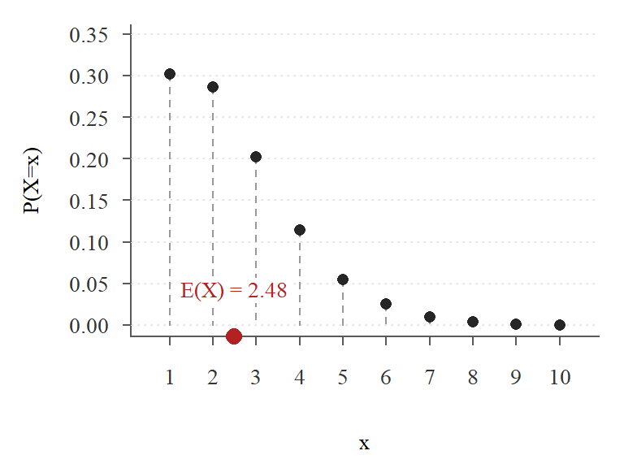
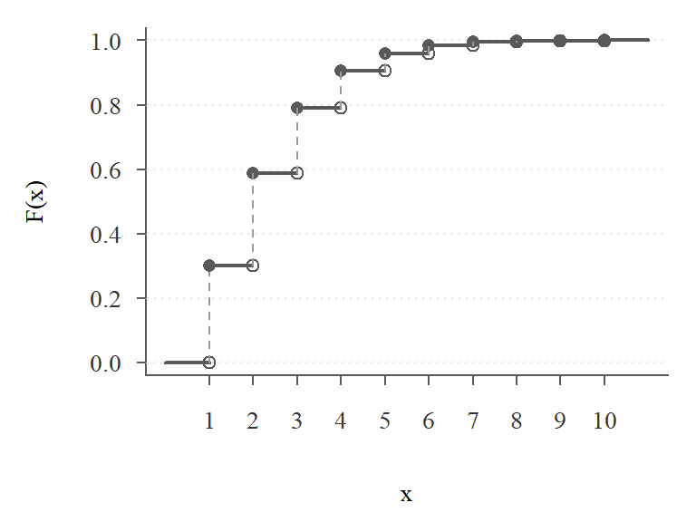
Beklenen değeri, varyansı ve standart sapmayı bu bölümdeki formüllerle hesaplayalım:
E_X <- sum(x_teslim * f_teslim)
Var_X <- sum(x_teslim^2 * f_teslim) - E_X^2
c(beklenen_deger = E_X, varyans = Var_X, standart_sapma = sqrt(Var_X))beklenen_deger varyans standart_sapma
2.479005 2.102212 1.449901 Rassal seçilen bir siparişin teslim süresinin beklenen değeri 2.48 gün, standart sapması 1.45 gün olarak bulunur. En olası teslim süresi 1 gündür ve siparişlerin yüzde 79.0 kadarı en fazla 3 günde teslim edilir, yani \(F(3)=0.790\) olur. Dağılımın sağ kuyruğu uzundur; az sayıda sipariş çok daha uzun sürede teslim edilmektedir (Şekil 8.6).
Burada hesapladığımız beklenen değer, bütün siparişlerin teslim sürelerinin ortalamasına, yani mean(eticaret$teslim_suresi) sonucuna eşittir. Bir anakütleden rassal seçilen bir birimin değeri olarak tanımlanan rassal değişkenin beklenen değeri anakütle ortalamasıdır. Varyans için ise küçük bir fark vardır: R’ın var() fonksiyonu örneklem varyansını, farkların kareler toplamını \(N\) yerine \(N-1\)’e bölerek hesaplar. Buradaki gibi gözlem sayısı çok büyük olduğunda bu fark önemsizdir.
8.4 Momentler
Bir dağılımın momentleri \(\E(X)\), \(\E(X^2)\), \(\E(X^3),\ldots\) biçiminde tanımlanan beklenen değerlerdir. İlk iki moment dağılımın merkezini ve yayılımını verir. Üçüncü ve dördüncü momentler ise dağılımın simetrisi ve kuyruklarının kalınlığı hakkında bilgi taşır. Betimsel istatistikte örneklemden hesapladığımız çarpıklık ve basıklık katsayıları (bkz. Bölüm 5) bu momentlerin örneklem karşılıklarıdır.
Tanım 8.8 (Moment) Kesikli rassal değişken \(X\)’in \(k\)’ıncı momenti \[ \mu_k=\E(X^k)=\sum_x x^k f(x), \quad k=0,1,2,... \] \(k\)’ıncı kuvvetinin beklenen değeri olarak tanımlanır. İlk dört moment aşağıdaki gibi yazılabilir:
| Moment | \(\mu_k\) | Tanım | |
|---|---|---|---|
| 1. moment | \(\mu_1\) | \(\E(X)\) | \(=\) anakütle ortalaması |
| 2. moment | \(\mu_2\) | \(\E(X^2)\) | \(= \Var(X) + \mu_1^2\) |
| 3. moment | \(\mu_3\) | \(\E(X^3)\) | |
| 4. moment | \(\mu_4\) | \(\E(X^4)\) |
Birinci moment, \(\mu_1\), rassal değişkenin ortalamasını, yani beklenen değerini ifade eder. \(X\)’in karesinin beklenen değeri, yani ikinci moment, varyans ile ilişkilidir. Kısayol varyans formülünden (bkz. Denklem 8.14) hareketle \[ \E(X^2) = \Var(X) + \mu_1^2 \] olduğu kolayca görülebilir. Üçüncü moment, \(\mu_3\), dağılımın çarpıklığına ilişkin bilgi içerir. Dördüncü moment, \(\mu_4\), dağılımın basıklığı ve sivriliği (kurtosis) hakkında bilgi içerir.
Örnek 8.10 Üç para atımı deneyinde (Örnek 8.1) \(X\)’in birinci ve ikinci momentlerini hesaplamıştık. Üçüncü ve dördüncü momentleri bulalım: \[ \E(X^3)=0 \frac{1}{8}+1 \frac{3}{8} + 2^3\frac{3}{8}+3^3\frac{1}{8}=6.75 \] ve \[ \E(X^4)=0 \frac{1}{8}+1 \frac{3}{8} + 2^4\frac{3}{8}+3^4\frac{1}{8}=16.5 \] olur.
Tanım 8.9 (Merkezi Moment) Kesikli r.d. \(X\)’in \(k\)’ıncı merkezi momenti, \(X\)’in beklenen değerden (yani birinci momentten) farkının \(k\)’ıncı kuvvetinin beklenen değeri olarak tanımlanır: \[ m_k=\E((X-\mu_1)^k)=\sum_x (x-\mu_1)^k f(x) \quad k=0,1,2,... \] Örneğin ilk dört merkezi moment aşağıdaki gibi yazılabilir:
| \(m_k\) | Tanım | ||
|---|---|---|---|
| 1. merkezi moment | \(m_1\) | \(\E(X)-\mu_1\) | \(=0\) |
| 2. merkezi moment | \(m_2\) | \(\E((X-\mu_1)^2)\) | \(=\Var(X)\) |
| 3. merkezi moment | \(m_3\) | \(\E((X-\mu_1)^3)\) | |
| 4. merkezi moment | \(m_4\) | \(\E((X-\mu_1)^4)\) |
Birinci merkezi moment, yani \(X\)’in anakütle ortalamasından (beklentisinden) farkının beklenen değeri sıfır olur. İkinci merkezi moment ile anakütle varyansı tanım olarak aynıdır.
Örnek 8.11 Üç para atımı deneyinde (Örnek 8.1) \(X\)’in üçüncü merkezi momenti
\[\begin{align*} m_3 &= \E((X-\mu_1)^3) \\ &= \sum_x (x-\mu)^3 f(x) \\ &= \left(0-\frac{3}{2}\right)^3\times \frac{1}{8} +\left(1-\frac{3}{2}\right)^3\times \frac{3}{8} + \left(2-\frac{3}{2}\right)^3\times\frac{3}{8} +\left(3-\frac{3}{2}\right)^3\times\frac{1}{8} \\ &= 0 \end{align*}\]ve dördüncü merkezi momenti
\[\begin{align*} m_4 &= \E((X-\mu_1)^4) \\ &= \sum_x (x-\mu)^4 f(x) \\ &= \left(0-\frac{3}{2}\right)^4\times \frac{1}{8} +\left(1-\frac{3}{2}\right)^4\times \frac{3}{8} + \left(2-\frac{3}{2}\right)^4\times\frac{3}{8} +\left(3-\frac{3}{2}\right)^4\times\frac{1}{8} \\ &= 1.3125 \end{align*}\]olarak bulunur. Üçüncü merkezi moment \(m_3\)’ün 0 olması dağılımın simetrikliğini göstermektedir.
Tanım 8.10 (Standart Moment) Kesikli r.d. \(X\)’in \(k\)’ıncı standart momenti \[ \gamma_k=\frac{m_k}{\sigma^k} \quad k=0,1,2,... \] şeklinde tanımlanır. Burada \(\sigma\) anakütle standart sapmasıdır: \[ \sigma=\sqrt{\Var(X)} =\sqrt{\E\left[\left(X-\mu_1 \right)^2\right]} \] İlk dört standart moment aşağıdaki gibi yazılabilir:
| \(\gamma_k\) | Tanım | ||
|---|---|---|---|
| 1. standart moment | \(\gamma_1\) | \(m_1/\sigma\) | \(=0\) |
| 2. standart moment | \(\gamma_2\) | \(m_2/\sigma^2\) | \(=1\) |
| 3. standart moment | \(\gamma_3\) | \(\E((X-\mu_1)^3)/\sigma^3\) | çarpıklık katsayısı |
| 4. standart moment | \(\gamma_4\) | \(\E((X-\mu_1)^4)/\sigma^4\) | basıklık katsayısı |
Birinci ve ikinci standart moment tanım gereği her zaman, sırasıyla, 0 ve 1 olur. Üçüncü standart moment ya da çarpıklık (skewness) katsayısı dağılımın simetrisine ilişkin bilgi içerir. Simetrik dağılımlar için \(\gamma_3\) sıfır olur. Sağa çarpık dağılımlar için \(\gamma_3>0\), sola çarpık dağılımlar için ise \(\gamma_3<0\) olur. Dördüncü standart moment, \(\gamma_4\), basıklık katsayısı olarak bilinir. Basıklık çoğu zaman tepe noktasının sivriliğiyle anlatılsa da katsayıyı asıl belirleyen kuyruklardır, çünkü dördüncü kuvvet ortalamadan uzak değerlere çok büyük ağırlık verir. \(\gamma_4\) genellikle normal dağılım ile karşılaştırılarak yorumlanır; normal dağılımın basıklık katsayısı 3’tür.
Örnek 8.12 Üç para atımı deneyinde (Örnek 8.1) \(\gamma_1=0\), \(\gamma_2=1\), ve \(\gamma_3=0\) olduğu açıktır. Kesikli rassal değişken \(X\) için dördüncü standart momenti hesaplayalım: \[ \gamma_4 = \frac{m_4}{\sigma^4} = \frac{1.3125}{0.75^2} = \frac{7}{3} \approx 2.333 \] Bu dağılımın basıklık katsayısı yaklaşık 2.333 olarak bulunur. Katsayı 3’ten küçük olduğu için dağılım normal dağılıma göre basıktır, yani kuyrukları normal dağılımınkinden daha incedir.
8.5 Bazı Kesikli Dağılımlar
Buraya kadar olasılık kütle fonksiyonunu her örnekte ayrı ayrı kurduk. Oysa uygulamada karşılaşılan rassal denemelerin çoğu birkaç temel yapıdan birine uyar. İki sonuçlu tek bir deneme Bernoulli, bu denemenin bağımsız tekrarlarındaki başarı sayısı binom, sonlu bir kümeden yerine koymadan yapılan çekilişteki başarı sayısı hipergeometrik, belirli bir aralıkta gerçekleşen olay sayısı ise Poisson dağılımı ile modellenir. Bu dağılımları tanıdığımızda olasılıkları tek tek saymak yerine az sayıda parametreden hesaplayabiliriz.
8.5.1 Bernoulli dağılımı
Bernoulli dağılımı en temel kesikli dağılımdır ve iki olası sonuçtan birine sahip olan deneyler/süreçler için kullanılır. Rassal denemenin olası sonuçları genellikle “başarı” (1) ve “başarısızlık” (0) olarak adlandırılır. Bir Bernoulli denemesinde başarı olayının gerçekleşme olasılığı \(p\), başarısızlık ise \(1-p\) olarak tanımlıdır:
\[ f(x)=\left\{% \begin{array}{ll} p, & ~x=1~\hbox{ise,} \\ 1-p, & ~x=0~\hbox{ise.} \\ \end{array}% \right. \tag{8.16}\]
Örnek olarak madeni para atma (Yazı-Tura), bir üretim bandından çekilen bir ürünün hatalı olup olmaması (defolu-defosuz), bir öğrencinin başarısı (geçti-kaldı), rassal seçilen bir hanenin özel sigortasının olması (var-yok) verilebilir.
\(X\) bir Bernoulli rassal değişkeni olsun. \(X\)’in beklenen değeri \[ \E(X)=\sum_x xf(x)=p\cdot1+(1-p)\cdot 0 =p, \tag{8.17}\] ikinci momenti \[ \E(X^2)=\sum_x x^2f(x)=p\cdot1+(1-p)\cdot 0 =p, \tag{8.18}\]
varyansı (ikinci merkezi moment) \[ \Var(X)=\E(X^2)-(\E(X))^2=p-p^2=p(1-p) \tag{8.19}\] ve standart sapması \[ \sigma = \sqrt{p(1-p)} \tag{8.20}\] olarak bulunur.
Örnek 8.13 Telefonda anket yapan bir firma geçmiş bilgilerden hareketle, bir kişinin anket sorularına cevap vermeyi kabul etme olasılığını 0.6, reddetme olasılığını 0.4 olarak bulmuştur. Görüşme reddedilirse \(X=0\), kabul edilirse \(X=1\) değerlerini almak üzere olasılık dağılımı aşağıdaki gibi yazılabilir: \[ \begin{array}{c|cc} x & 0 & 1 \\ \hline f(x)=\P(X=x) & 0.4 & 0.6 \\ \end{array} \] \(X\)’in beklenen değerini ve varyansını bulun.
Çözüm:
\[\begin{align*} \E(X) &= 0\cdot(0.4) + 1\cdot (0.6) \\ &= 0.6\equiv p_x \end{align*}\] \[\begin{align*} \Var(X) &= \E(X^2)-[\E(X)]^2 \\ &= (0\cdot (0.4)+1^2\cdot 0.6) - 0.6^2 \\ &= 0.24\equiv p_x(1-p_x) \end{align*}\]Bu örnekte anket firmasının, birbirinden bağımsız olarak, 10 kişiyle görüştüğünü düşünelim. Bu görüşmelerin 5’inin başarıyla sonuçlanma olasılığı kaçtır? Buna benzer olasılıkların betimlenmesinde Binom dağılımı kullanılır.
8.5.2 Binom dağılımı
Binom dağılımının temelinde birbirinden bağımsız olarak tekrarlanan Bernoulli denemeleri yer alır. Belirli sayıda (\(n\)) bağımsız Bernoulli denemesinde toplam başarı sayısını modellemek için kullanılır. Örnek olarak bir sınıftaki öğrencilerin bir sınavda başarılı olma sayısını, bir üretim hattında belirli sayıda ürünün hatalı olup olmamasını, bir ankete katılanların belirli bir soruya evet/hayır cevabı verme sayısını verebiliriz.
\(Z_1, Z_2, \ldots, Z_n\) birbirinden bağımsız ve aynı Bernoulli(\(p\)) dağılımına uyan rassal değişkenler olsun. Başarı ve başarısızlık olasılıkları \[ \P(Z_i=1)=p,\quad \P(Z_i=0)=1-p \] olarak tanımlansın.
\(X\) rassal değişkenini, toplam başarı sayısı, yani \(n\) bağımsız Bernoulli denemesinde \(Z\)’nin \(1\) değerini alma sayısı olarak tanımlayalım: \[ X=\sum_{i=1}^n Z_i=\mbox{toplam başarı sayısı} \tag{8.21}\] \(Z_i\)’ler yalnızca 0 ve 1 değerlerini aldığı için tüm sonuçlar üzerine toplam aldığımızda başarı sayısına ulaşırız. Binom dağılımı \(X\)’in olası sonuçlarının olasılıklarını belirler.
Toplam başarı sayısı \(X\) aşağıda olasılık kütle fonksiyonu verilen \(Binom(n,p)\) dağılımına uyar: \[ f(x) = \binom{n}{x} p^x (1-p)^{n-x} = \frac{n!}{x!(n-x)!}p^x (1-p)^{n-x}, \quad x=0,1,2,\ldots,n \tag{8.22}\]
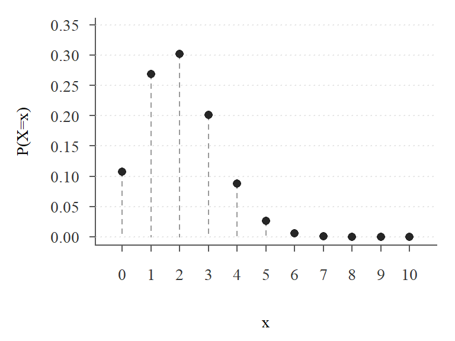
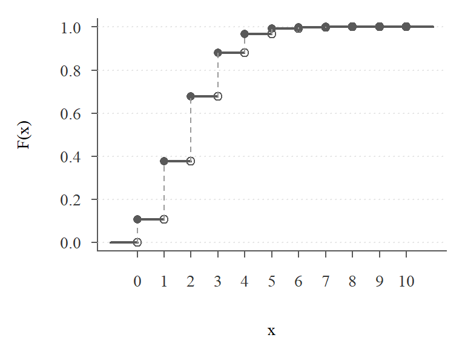
Şekil 8.7 \(X\sim Binom(n=10,~p=0.2)\) dağılımının olasılık kütle ve birikimli dağılım fonksiyonlarını göstermektedir.
Bir \(Binom(n,p)\) rassal değişkeninin beklenen değeri, varyansı ve standart sapması \[ \E(X)=np \tag{8.23}\] \[ \Var(X)=np(1-p) \tag{8.24}\] \[ \sigma = \sqrt{\Var(X)}=\sqrt{np(1-p)} \tag{8.25}\] olur. Beklenen değeri göstermek kolaydır. \(X=\sum_{i=1}^n Z_i\) olduğu ve her Bernoulli değişkeninin beklenen değeri \(\E(Z_i)=p\) olduğu için beklenti işlemcisinin toplama özelliğinden \(\E(X)=\E(Z_1)+\ldots+\E(Z_n)=np\) bulunur. Varyans için bağımsız rassal değişkenlerin toplamının varyansının, varyansların toplamına eşit olduğu sonucunu kullanırız: \(\Var(X)=\Var(Z_1)+\ldots+\Var(Z_n)=np(1-p)\). Bu sonucu Birleşik Dağılımlar bölümünde göstereceğiz (bkz. Bölüm 11).
Binom dağılımının iki parametresi vardır: tekrar sayısı \(n\), ve başarı olasılığı \(p\). Dağılımın şekli, merkezi, momentleri, ve varyansı bu parametrelere göre değişir. Şekil 8.8 farklı \(n\) ve \(p\) değerleri için olasılık kütle fonksiyonunun nasıl değiştiğini göstermektedir.
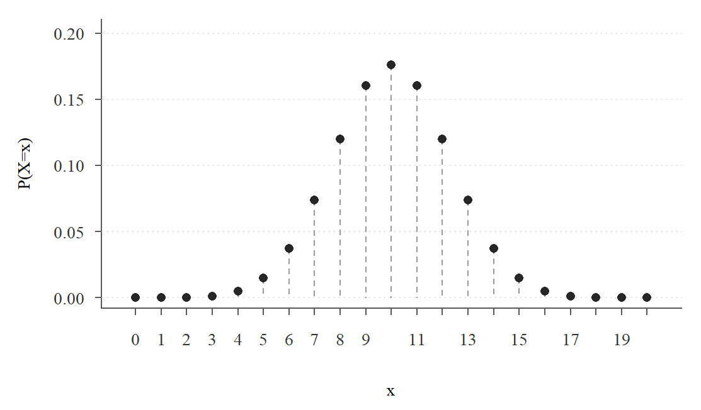
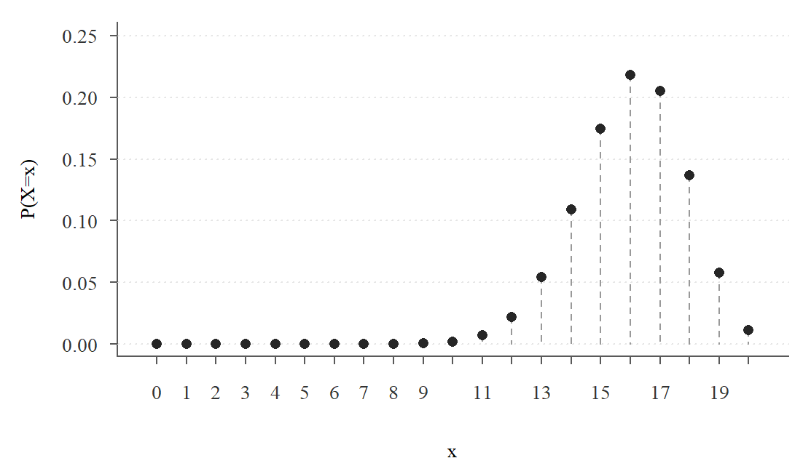
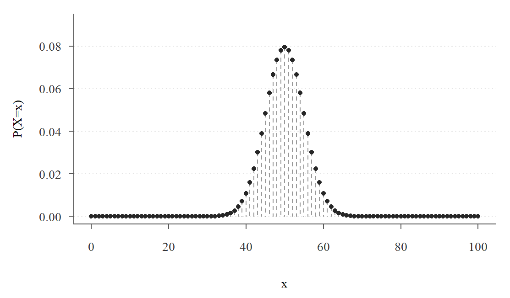
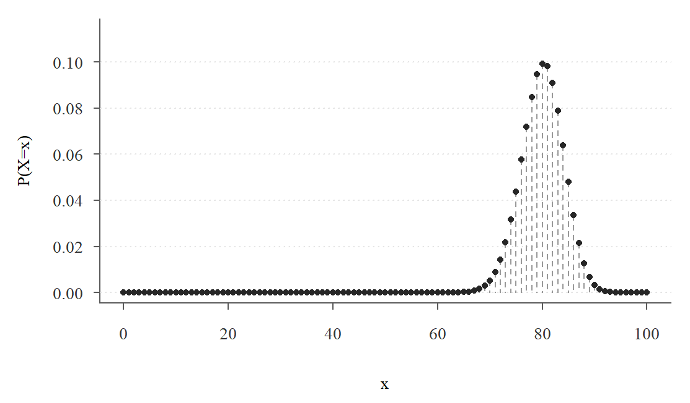
Örnek 8.14 Örnek 8.13’de verilen Bernoulli dağılımını kullanarak 10 görüşmenin 5’inin başarıyla sonuçlanma olasılığını bulun. Bunun için genel olarak “n denemede x başarı” olasılığını veren Binom dağılımını bulun.
Çözüm
Başarı olasılığı \(=0.6\), başarısızlık olasılığı \(0.4\) olduğuna göre “n denemede x başarı” olasılığını veren Binom dağılımı \[ f(x) = \frac{n!}{x!(n-x)!} 0.6^x\cdot 0.4^{n-x} \] olur. \(n=10\) denemede \(x=5\) başarı olasılığı \[ \P(X=5) = \frac{10!}{5!(10-5)!} 0.6^5\cdot 0.4^{10-5} \approx 0.20 \] yani yaklaşık \(\%20\)’dir.
R’da Binom dağılımına ilişkin hesaplamaları yapmak için dbinom() ve pbinom() fonksiyonları kullanılabilir. Önceki örnekte olasılık kütle fonksiyonu ve birikimli dağılım fonksiyonunu bulalım:
# Parametreler
n <- 10
p <- 0.6
# Başarı sayıları
x <- 0:n
# Olasılık Kütle Fonksiyonu (PMF)
pmf <- dbinom(x, size = n, prob = p)
# Birikimli Dağılım Fonksiyonu (CDF)
cdf <- pbinom(x, size = n, prob = p)
print(cbind(x,pmf,cdf), digits=2) x pmf cdf
[1,] 0 0.0001 0.0001
[2,] 1 0.0016 0.0017
[3,] 2 0.0106 0.0123
[4,] 3 0.0425 0.0548
[5,] 4 0.1115 0.1662
[6,] 5 0.2007 0.3669
[7,] 6 0.2508 0.6177
[8,] 7 0.2150 0.8327
[9,] 8 0.1209 0.9536
[10,] 9 0.0403 0.9940
[11,] 10 0.0060 1.0000Şekil 8.9 Binom(10,0.6) dağılımının olasılık kütle ve birikimli dağılım fonksiyonlarını göstermektedir.
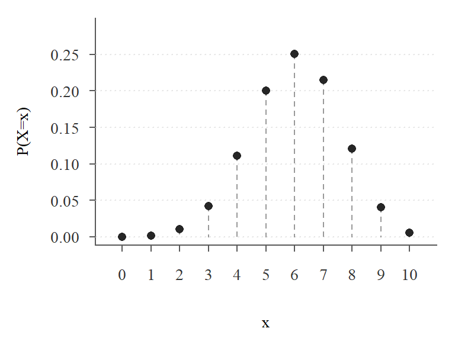
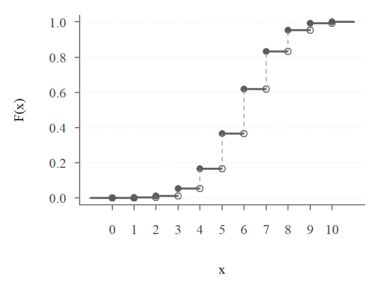
8.5.3 Hipergeometrik dağılım
Eğer Bernoulli denemeleri birbirinden bağımsız değilse toplam başarı sayısı Binom dağılımına uymaz. Bunun tipik örneği sonlu bir anakütleden yerine koymadan yapılan çekilişlerdir: her çekiliş kalan nesnelerin bileşimini, dolayısıyla sonraki çekilişlerin olasılıklarını değiştirir. \(B\) tanesi başarı olan \(N\) nesnelik bir anakütleden yerine koymadan \(n\) nesne çekildiğini düşünelim. Örneklemdeki başarı sayısı \(X\)’in olasılık dağılımı
\[ f(x) = \frac{\binom{B}{x} \binom{N-B}{n-x}}{\binom{N}{n}} \tag{8.26}\] olur. Burada \(x\) rassal değişkeni, \(\max(0,n-(N-B))\) ile \(\min(n,B)\) arasında tamsayı değerler alabilir. Beklenen değer ve varyans, sırasıyla, \[ \E(X)=np, \tag{8.27}\] \[ \Var(X)=\frac{N-n}{N-1}np(1-p) \tag{8.28}\] olarak bulunur. Burada \[ p=\frac{B}{N} \] anakütledeki başarı oranıdır. Varyans formülündeki \((N-n)/(N-1)\) çarpanına sonlu anakütle düzeltmesi denir. Anakütle örnekleme göre çok büyükse bu çarpan 1’e yaklaşır ve hipergeometrik dağılım Binom dağılımına yakınsar; çünkü o durumda yerine koymadan çekmek ile yerine koyarak çekmek arasındaki fark önemsizleşir.
Örnek 8.15 Bir sınıfta 20 öğrenci bulunmaktadır. Bu öğrencilerden 8’i kız, 12’si erkektir. Sınıf öğretmeni rassal olarak 5 öğrenci seçiyor. Seçilen öğrencilerden 3’ünün kız olma olasılığı kaçtır?
Çözüm: Anakütlenin boyutu \(N=20\) ve seçilen öğrenci sayısı \(n=5\) olduğuna göre olanaklı kombinasyonların sayısı \[ \frac{N!}{n!(N-n)!} = \frac{20!}{5!(20-5)!} = 15504 \] olur. Anakütle 8 başarı (kız öğrenci) 12 başarısızlık (erkek öğrenci) içerdiğine göre, 8 kız öğrenciden 3’ünü seçmenin yolu sayısı \[ \frac{B!}{x!(B-x)!} = \frac{8!}{3!(8-3)!} = 56 \] 12 erkek öğrenciden 2’sini seçmenin yolu sayısı \[ \frac{(N-B)!}{(n-x)!(N-B-n+x)!} = \frac{12!}{2!(20-8-5+3)!} = 66 \] Böylece 3 kız öğrencinin seçilme olasılığı \[ f(3)=\P(X=3) = \frac{56\cdot 66}{15504}=0.2384 \] yani yaklaşık \(\%23.84\) olur.
R’da hipergeometrik olasılık kütle ve birikimli dağılım fonksiyonları için dhyper() ve phyper() fonksiyonlarını kullanabiliriz:
# Hipergeometrik Dağılım Parametreleri
N <- 20 # Toplam öğrenci sayısı
B <- 8 # Kız öğrenci sayısı (başarı)
n <- 5 # Seçilen öğrenci sayısı
# Başarı sayısı (kız) değerleri
x <- 0:n
# PMF Hesaplama
pmf <- dhyper(x, B, N - B, n)
# CDF Hesaplama
cdf <- phyper(x, B, N - B, n)
print(cbind(x,pmf,cdf), digits=2) x pmf cdf
[1,] 0 0.0511 0.051
[2,] 1 0.2554 0.307
[3,] 2 0.3973 0.704
[4,] 3 0.2384 0.942
[5,] 4 0.0542 0.996
[6,] 5 0.0036 1.000Örnek 8.16 Bir fabrikada üretilen 100 üründen 30’u hatalı (düşük kaliteli), 70’i ise kalitelidir. Kalite kontrol uzmanı, rassal olarak 10 ürün seçmekte ve bu seçilen ürünlerin içinde kaç tane hatalı olduğunu incelemektedir. Bu durumda, seçilen 10 ürün içinde \(x\) tane hatalı ürün olma olasılığını veren dağılımı bulun. Bu 10 üründe 2 hatalı olma olasılığı kaçtır?
Çözüm: Bu olasılıklar hipergeometrik dağılım ile bulunabilir. Verilenleri özetleyelim: \[
N=100,\quad B=30,\quad n=10
\] \(n=10\) boyutlu bir örneklemde hatalı ürün sayısı \(x\) olasılığı \[
f(x)=\P(X=x) = \frac{\binom{B}{x} \binom{N-B}{n-x}}{\binom{N}{n}}=\frac{\binom{30}{x} \binom{70}{10-x}}{\binom{100}{10}}
\] \(x=2\) hatalı ürün olma olasılığını R ile bulalım:
choose(30,2)*choose(70,8)/choose(100,10)[1] 0.2372316Seçilen 10 üründen 2’sinin düşük kaliteli olma olasılığı yaklaşık \(\%23.7\)’dir.
Anakütledeki hatalı ürün oranı \(p=0.3\) olduğuna göre, çekilişler yerine koyarak yapılsaydı hatalı ürün sayısı \(Binom(10,~0.3)\) dağılımına uyardı:
dbinom(2, size = 10, prob = 0.3)[1] 0.2334744İki olasılık birbirine yakındır, çünkü 10 birimlik örneklem 100 birimlik anakütleye göre küçüktür ve sonlu anakütle düzeltmesi \((100-10)/(100-1)\approx 0.91\) bire yakındır.
\(x=0,1,2,\ldots,10\) için olasılıklar ve birikimli olasılıkları hesaplayalım:
# Hipergeometrik Dağılım Parametreleri
N <- 100 # Toplam ürün sayısı
B <- 30 # Hatalı ürün sayısı
n <- 10 # Seçilen ürün sayısı
# Hatalı ürün sayısı (x) değerleri
x <- 0:n
# PMF Hesaplama
pmf <- dhyper(x, B, N - B, n)
# CDF Hesaplama
cdf <- phyper(x, B, N - B, n)
# ekrana yazdır
print(cbind(x, round(pmf,3), round(cdf,3))) x
[1,] 0 0.023 0.023
[2,] 1 0.113 0.136
[3,] 2 0.237 0.373
[4,] 3 0.281 0.654
[5,] 4 0.208 0.862
[6,] 5 0.100 0.961
[7,] 6 0.031 0.993
[8,] 7 0.006 0.999
[9,] 8 0.001 1.000
[10,] 9 0.000 1.000
[11,] 10 0.000 1.000Şekil 8.10 \(X\)’in olasılık kütle ve birikimli dağılım fonksiyonlarını göstermektedir.
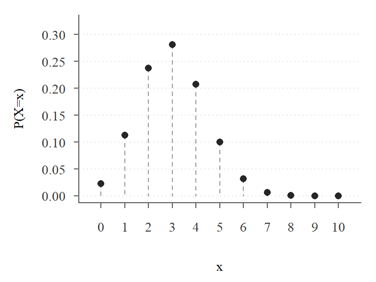
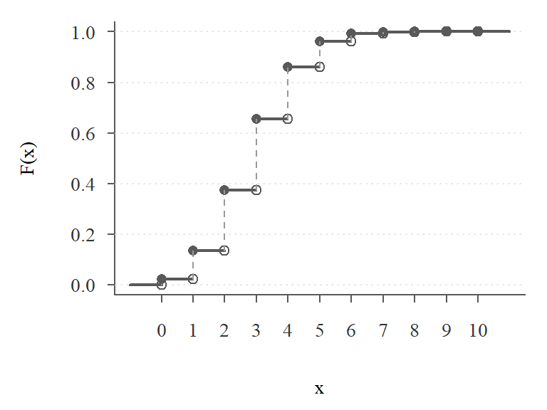
8.5.4 Poisson dağılımı
Poisson dağılımı, belirli bir zaman aralığında ya da belirli bir alanda gerçekleşen olayların sayısını modellemek için kullanılır. Örnek olarak bir çağrı merkezine bir saatte gelen çağrı sayısı, bir karayolunda bir ayda meydana gelen trafik kazası sayısı, bir bankaya 15 dakikada gelen müşteri sayısı verilebilir. Poisson dağılımı şu varsayımlara dayanır:
- Olaylar birbirinden bağımsız olarak gerçekleşir.
- Olayların ortalama gerçekleşme hızı incelenen aralık boyunca sabittir.
- Çok kısa bir zaman diliminde iki olayın aynı anda gerçekleşme olasılığı ihmal edilebilir.
Kesikli rassal değişken \(X\) bir olayın belirli bir aralıkta gerçekleşme sayısını göstersin. \(X\sim Poisson(\lambda)\) ile gösterdiğimiz Poisson dağılımının olasılık kütle fonksiyonu \[ f(x)=\frac{\lambda^x e^{-\lambda}}{x!}, \quad x=0,1,2,\ldots \tag{8.29}\] olarak yazılır. Buradaki \(\lambda>0\) parametresi incelenen aralıktaki ortalama olay sayısıdır ve dağılımın hem merkezini hem de biçimini belirler. Aralığın uzunluğu değişirse \(\lambda\) da orantılı olarak değişir: dakikada ortalama 2 müşteri gelen bir dükkana 5 dakikada ortalama 10 müşteri gelir. Şekil 8.11 ortalaması 2 olan bir Poisson rassal değişkeninin olasılık kütle ve birikimli dağılım fonksiyonlarını göstermektedir.
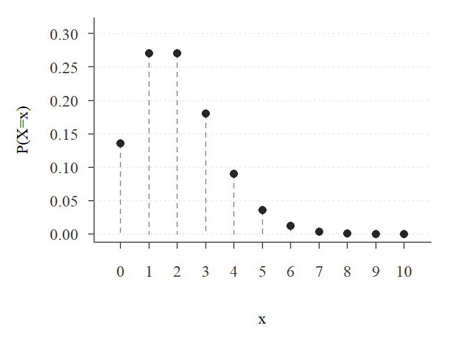
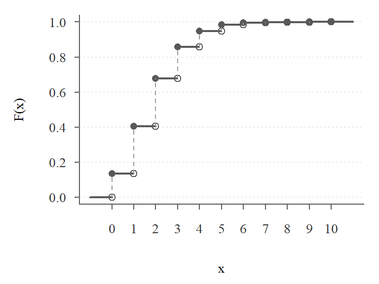
Bir Poisson rassal değişkeninin beklenen değer ve varyansının \[ \E(X)=\lambda \] \[ \Var(X)=\lambda \] olduğu gösterilebilir. Beklenen değer ile varyansın eşit olması Poisson dağılımının ayırt edici bir özelliğidir.
Poisson dağılımı binom dağılımının bir sınırı olarak da düşünülebilir. Deneme sayısı \(n\) çok büyük, başarı olasılığı \(p\) çok küçük olduğunda \(Binom(n,p)\) dağılımı, \(\lambda=np\) olmak üzere \(Poisson(\lambda)\) dağılımına yaklaşır. Örneğin bir internet sitesini bir günde ziyaret eden 1000 kişinin her birinin bir ürünü satın alma olasılığı 0.003 ise satın alan kişi sayısı \(Binom(1000,~0.003)\) dağılımına uyar ve ortalama \(\lambda=1000\times 0.003=3\) olur. İki dağılımın olasılıkları neredeyse aynıdır:
x_k <- 0:6
tablo_bp <- rbind(binom = dbinom(x_k, size = 1000, prob = 0.003),
poisson = dpois(x_k, lambda = 3))
colnames(tablo_bp) <- x_k
round(tablo_bp, 4) 0 1 2 3 4 5 6
binom 0.0496 0.1491 0.2242 0.2244 0.1683 0.1009 0.0503
poisson 0.0498 0.1494 0.2240 0.2240 0.1680 0.1008 0.0504Bu yüzden Poisson dağılımı, çok sayıda kişi ya da birim arasında her birinin küçük bir olasılıkla gerçekleştirdiği olayların sayısı için iyi bir modeldir.
Örnek 8.17 Bir kütüphanede bir günde ödünç alınan kitap sayısı ortalaması 3 olan bir Poisson dağılımı ile temsil edilebilmektedir. Buna göre bir günde ödünç alınan kitap sayısının 3’ten fazla olma olasılığı kaçtır?
Çözüm:
Verilenlere göre ödünç kitap sayısı \(X\sim~Poisson(\lambda=3)\) dağılımına uymaktadır, yani: \[ f(x)=\P(X=x)=\frac{\lambda^x e^{-\lambda}}{x!} = \frac{3^x e^{-3}}{x!} \] yazabiliriz. Buradan \(X\)’in 0, 1, 2, ve 3 olma olasılıkları: \[ \P(X=0) = \frac{3^0 e^{-3}}{0!}=e^{-3}\approx 0.050 \] \[ \P(X=1) = \frac{3^1 e^{-3}}{1!}=3e^{-3}\approx 0.149 \] \[ \P(X=2) = \frac{3^2 e^{-3}}{2!}\approx 0.224 \] \[ \P(X=3) = \frac{3^3 e^{-3}}{3!}\approx 0.224 \] olur. Öyleyse \[ \P(X>3) = 1-\P(X\leq 3) = 1-(0.050+0.149+0.224+0.224)=0.353 \] yaklaşık \(\%35.3\) bulunur.
R’da Poisson dağılımının olasılık kütle ve birikimli dağılım fonksiyonlarını dpois() ve ppois() kullanarak da bulabiliriz:
# Poisson Dağılımı Parametreleri
lambda <- 3 # Ortalama olay sayısı (günde ortalama 3 kitap ödünç alma)
# Olay sayısı (x) değerleri
x <- 0:10 # 0'dan 10'a kadar olan değerler
# PMF Hesaplama
pmf <- dpois(x, lambda)
# CDF Hesaplama
cdf <- ppois(x, lambda)
# ekrana yazdır
print(cbind(x, pmf=round(pmf,3), cdf=round(cdf,3))) x pmf cdf
[1,] 0 0.050 0.050
[2,] 1 0.149 0.199
[3,] 2 0.224 0.423
[4,] 3 0.224 0.647
[5,] 4 0.168 0.815
[6,] 5 0.101 0.916
[7,] 6 0.050 0.966
[8,] 7 0.022 0.988
[9,] 8 0.008 0.996
[10,] 9 0.003 0.999
[11,] 10 0.001 1.000Şekil 8.12 \(X\)’in olasılık kütle ve birikimli dağılım fonksiyonlarını göstermektedir.
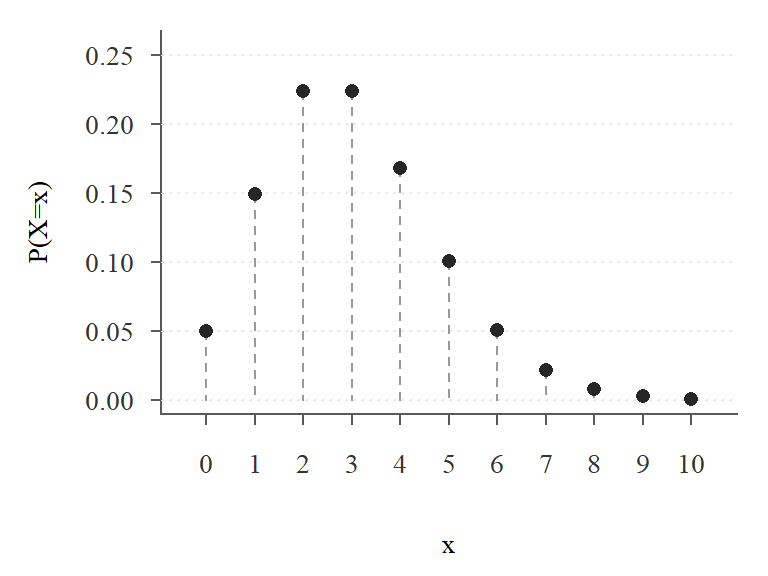
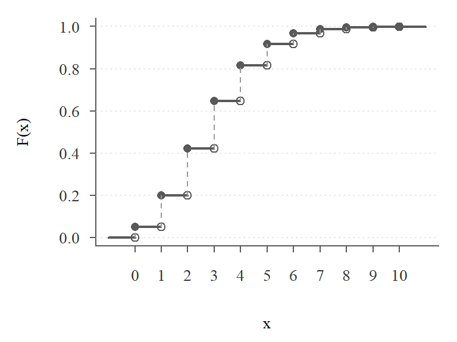
8.5.5 R’da dağılım fonksiyonları
R’da bu bölümdeki her dağılım için dört fonksiyon vardır. Fonksiyonların adları, dağılımın kısaltmasının önüne gelen bir harfle oluşturulur (Tablo 8.2).
R’daki kesikli dağılım fonksiyonları
| Ön ek | Hesapladığı | Binom | Hipergeometrik | Poisson |
|---|---|---|---|---|
| d | olasılık kütle fonksiyonu, \(\P(X=x)\) | dbinom() |
dhyper() |
dpois() |
| p | birikimli dağılım fonksiyonu, \(F(x)=\P(X\leq x)\) | pbinom() |
phyper() |
ppois() |
| q | kantil: \(F(x)\) verilen olasılığa eşit ya da ondan büyük olan en küçük \(x\) | qbinom() |
qhyper() |
qpois() |
| r | bu dağılımdan rassal sayı üretir | rbinom() |
rhyper() |
rpois() |
Örneğin \(X\sim Binom(10,~0.6)\) için:
dbinom(5, size = 10, prob = 0.6) # P(X = 5)[1] 0.2006581pbinom(5, size = 10, prob = 0.6) # P(X <= 5)[1] 0.36689671 - pbinom(5, size = 10, prob = 0.6) # P(X > 5)[1] 0.6331033qbinom(0.5, size = 10, prob = 0.6) # medyan: F(x) >= 0.5 olan en küçük x[1] 6Adı r harfiyle başlayan fonksiyonlar simülasyon için kullanılır (bkz. Alıştırma 8.7). Aynı adlandırma düzeni sürekli dağılımlar için de geçerlidir; örneğin normal dağılım için dnorm(), pnorm(), qnorm() ve rnorm() fonksiyonlarını kullanacağız.
8.6 Çözümlü Alıştırmalar
Alıştırma 8.1 Standart altı yüzlü 2 zar atılıyor. \(X\) rassal değişkeni zarların toplamını göstersin.
- \(X\)’in olasılık kütle fonksiyonunu bulunuz ve grafiğini çiziniz.
- \(X\)’in birikimli dağılım fonksiyonunu bulunuz ve grafiğini çiziniz.
- \(X=7\) olasılığını bulunuz.
- \(X\)’in beklenen değeri kaçtır?
- \(X\)’in standart sapması kaçtır?
Çözüm
(a, b) İki zar atıldığında örneklem uzayı \(6\cdot 6=36\) temel sonuçtan oluşur. \(X\) rassal değişkeni ise \((2,3,4,\ldots,11,12)\) değerlerinden birini alır. Örneklem uzayının temel sonuçları ile \(X\) arasındaki ilişki aşağıdaki tabloda özetlenmektedir:
| \(X\) | Örneklem uzayındaki sonuçlar | Sonuç sayısı | \(f(x)\) | \(F(x)\) |
|---|---|---|---|---|
| 2 | (1,1) | 1 | 0.028 | 0.028 |
| 3 | (1,2), (2,1) | 2 | 0.056 | 0.083 |
| 4 | (1,3), (2,2), (3,1) | 3 | 0.083 | 0.167 |
| 5 | (1,4), (2,3), (3,2), (4,1) | 4 | 0.111 | 0.278 |
| 6 | (1,5), (2,4), (3,3), (4,2), (5,1) | 5 | 0.139 | 0.417 |
| 7 | (1,6), (2,5), (3,4), (4,3), (5,2), (6,1) | 6 | 0.167 | 0.583 |
| 8 | (2,6), (3,5), (4,4), (5,3), (6,2) | 5 | 0.139 | 0.722 |
| 9 | (3,6), (4,5), (5,4), (6,3) | 4 | 0.111 | 0.833 |
| 10 | (4,6), (5,5), (6,4) | 3 | 0.083 | 0.917 |
| 11 | (5,6), (6,5) | 2 | 0.056 | 0.972 |
| 12 | (6,6) | 1 | 0.028 | 1.000 |
Örneklem uzayındaki her bir temel sonucun olasılığı eşittir: \(1/36\approx 0.028\). Şekil 8.13 bu deneyin olasılık kütle fonksiyonunu ve birikimli dağılım fonksiyonunu göstermektedir.
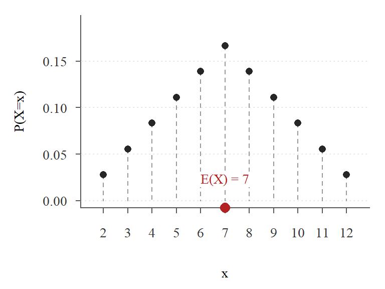
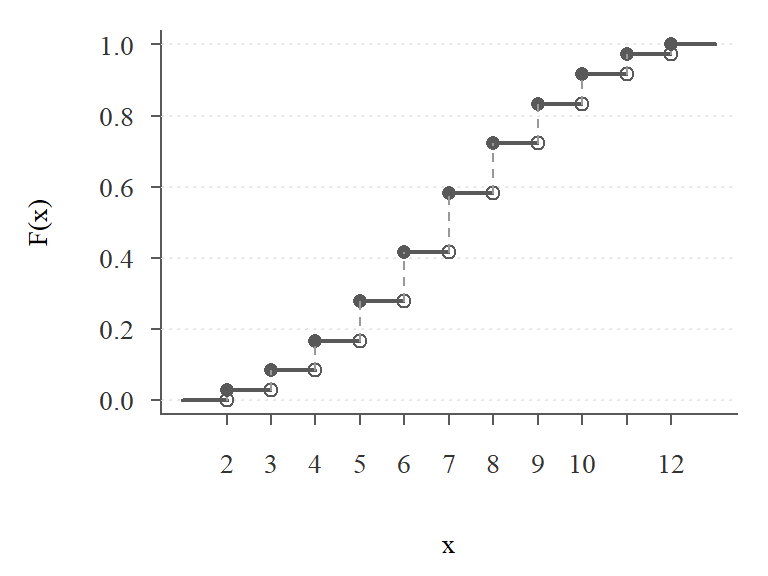
c) \(\P(X=7)=0.167\)
d) \(X\)’in beklenen değeri:
\[ \E(X) = \sum_x xf(x) = 7 \]
e) \(X\)’in varyansı:
\[ \E(X^2) = \sum_x x^2 f(x)=54.83 \] \[ \Var(X) = \E(X^2)-[\E(X)]^2 = 54.83-7^2=5.83\equiv \sigma_X^2 \] standart sapma: \[ \sigma_X=\sqrt{5.83} = 2.415 \]
Alıştırma 8.2 Aşağıda verilen fonksiyonun \[ f(x) = c(x^2+2),\quad x=0,1,2 \] bir olasılık kütle fonksiyonu olabilmesi için \(c\) kaç olmalıdır?
Çözüm:
Bu fonksiyonun bir olasılık kütle fonksiyonu olabilmesi için \(f(x)\geq 0\) ve \(\sum_x f(x)=1\) olmalıdır. \(x\)’in tüm değerleri için \[ \sum_x f(x) = c(0+2) + c(1+2) + c(2^2+2)=2c+3c+6c \] Buradan \[ 11c=1~\rightarrow c=1/11 \] bulunur. Öyleyse olasılık kütle fonksiyonu aşağıdaki gibi yazılabilir: \[ f(x) = \frac{(x^2+2)}{11},\quad x=0,1,2 \]
Alıştırma 8.3 Bir e-ticaret sitesi, her bir sipariş için sabit 50 TL dağıtım maliyetine sahiptir. \(X\) siparişin teslim süresini (gün olarak) göstermektedir. Teslim süresinin her günü için 20 TL ek maliyet oluşmaktadır: \[ Y=50+20X \] \(X\)’in dağılımı şu şekildedir: \[ \begin{array}{c|ccccc} x & 1 & 2 & 3 & 4 & 5\\ \hline f(x)=\P(X=x) & 0.15 & 0.25 & 0.30 & 0.20 & 0.10 \\ \end{array} \] Teslim maliyetinin beklenen değer ve varyansını bulun.
Çözüm:
Önce \(\E(X)\)’i bulalım: \[ \E(X) = \sum_x xf(x) = 1(0.15)+2(0.25)+3(0.30)+4(0.20)+5(0.10)=2.85 \] Varyansını bulalım: \[ \E(X^2) = \sum_x x^2 f(x) = 1(0.15)+2^2(0.25)+3^2(0.30)+4^2(0.20)+5^2(0.10)=9.55 \] \[ \sigma_X^2 = \E(X^2)-(\E(X))^2 = 9.55-2.85^2 = 1.4275 \] Buradan \[ \E(Y) = 50+20\E(X) = 50+20(2.85)=107 \] \[ \Var(Y) = 20^2\sigma_X^2=400\cdot (1.4275)=571 \]
Alıştırma 8.4 Bir sektörde önümüzdeki yıl iflas edecek küçük ölçekli firmaların sayısının ortalaması 2 olan bir Poisson dağılımına uyduğu tahmin edilmiştir. İflas edecek firma sayısının 2’den fazla olma olasılığı kaçtır?
Çözüm:
Önümüzdeki yıl iflas edecek küçük ölçekli firmaların sayısı \(X\sim~Poisson(\lambda=2)\) dağılımına uymaktadır, yani: \[ \P(X=x)=\frac{\lambda^x e^{-\lambda}}{x!} = \frac{2^x e^{-2}}{x!} \] yazabiliriz. Buradan \(X\)’in 0, 1, ve 2 olma olasılıkları: \[ \P(X=0) = \frac{2^0 e^{-2}}{0!}=e^{-2}\approx 0.135 \] \[ \P(X=1) = \frac{2^1 e^{-2}}{1!}=2e^{-2}\approx 0.271 \]
\[ \P(X=2) = \frac{2^2 e^{-2}}{2!}=2e^{-2}\approx 0.271 \] Buradan \(\P(X\leq 2)=0.135+0.271+0.271=0.677\) ve \[ \P(X> 2) = 1-\P(X\leq 2) =1- 0.677 = 0.323 \] bulunur.
Alıştırma 8.5 eticaret_gunluk veri kümesi, eticaret verisindeki siparişlerin günlere göre sayısını içerir (bkz. Tablo 3.4). Bir günde gelen sipariş sayısı Poisson dağılımına uyar mı? Ortalama ile varyansı karşılaştırarak ve gözlenen dağılımı aynı ortalamaya sahip Poisson dağılımıyla kıyaslayarak tartışınız.
Çözüm:
load("Data/eticaret.RData")
siparis <- eticaret_gunluk$siparis_sayisi
c(gun = length(siparis), ortalama = mean(siparis), varyans = var(siparis)) gun ortalama varyans
365.0000 53.9589 387.3802 Poisson dağılımında beklenen değer ile varyans eşittir. Günlük sipariş sayısının ortalaması 54.0, varyansı ise 387.4 olarak bulunur; varyans ortalamanın yaklaşık 7.2 katıdır. Ortalaması 54.0 olan bir Poisson dağılımında günlerin yaklaşık yüzde 95’i 40 ile 69 sipariş arasında kalmalıdır. Oysa gözlenen günlerin yüzde 23 kadarı bu aralığın dışındadır (Şekil 8.14).
x_s <- min(siparis):max(siparis)
p_s <- dpois(x_s, lambda = lambda_g)
hist(siparis, breaks = seq(25, 190, by = 5), freq = FALSE, col = "gray85", border = "gray55",
ylim = c(0, 1.05 * max(p_s)),
main = "", xlab = "Günlük sipariş sayısı", ylab = "Göreli sıklık / olasılık")
goster <- p_s > 1e-4 # sıfıra çok yakın olasılıklar çizilmez
points(x_s[goster], p_s[goster], pch = 16, cex = 0.6, col = "firebrick") # her tam sayı için ayrı olasılık
legend("topright", bty = "n", pch = c(15, 16), col = c("gray85", "firebrick"),
legend = c("Gözlenen günler (5'erlik sınıflar)", "Poisson olasılıkları"))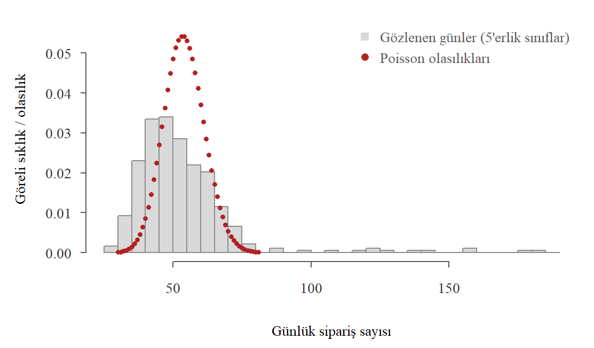
Poisson dağılımı kesikli olduğu için olasılıkları her tam sayı değeri için ayrı bir noktayla gösterilmiştir; noktalar birleştirilmemiştir. Histogram ise gözlenen günleri 5 siparişlik sınıflarda toplar; yoğunluk ölçeğinde çizildiği için yüksekliği, sınıftaki bir sipariş değerine düşen ortalama göreli sıklığı gösterir ve Poisson olasılıklarıyla karşılaştırılabilir.
Gözlenen dağılım Poisson dağılımından çok daha yayıktır. Bunun nedeni, Poisson dağılımının “ortalama hız sabittir” varsayımının bu veride sağlanmamasıdır. Günlere göre ortalama sipariş sayılarına bakalım:
round(tapply(siparis, format(eticaret_gunluk$tarih, "%u"), mean), 1) # 1 = pazartesi, 7 = pazar 1 2 3 4 5 6 7
48.7 47.0 48.1 50.7 53.0 62.4 68.1 round(tapply(siparis, format(eticaret_gunluk$tarih, "%m"), mean), 1) # aylar 01 02 03 04 05 06 07 08 09 10 11 12
44.2 44.5 46.3 48.5 49.5 52.0 48.3 48.6 54.1 57.1 87.4 66.9 Hafta sonu günlerinde sipariş sayısı hafta içinden belirgin biçimde yüksektir, kasım ayındaki indirim dönemi de ortalamayı yukarı çeker. Farklı günlerin farklı ortalama hızları olduğu için bütün günleri tek bir \(\lambda\) ile modellemek uygun değildir. Tek tek her günün sipariş sayısı kendi ortalamasıyla bir Poisson dağılımına uyuyor olsa bile, ortalamaları farklı günleri bir araya getirdiğimizde varyans ortalamadan büyük çıkar. Bir veride varyansın ortalamadan belirgin biçimde büyük olmasına aşırı yayılım (overdispersion) denir ve Poisson varsayımının sorgulanması gerektiğine işaret eder.
Alıştırma 8.6 Bir emlakçının bir görüşmede satış yapma olasılığı 0.20’dir. Emlakçı 8 görüşme yaptığında
- Hiç satış yapmama olasılığı kaçtır?
- 1 satış yapma olasılığı kaçtır?
- Satış sayısının 2 ile 4 arasında olma olasılığı kaçtır? (2 ve 4 dahil)
- Olasılık kütle fonksiyonunun grafiğini çizin.
- Birikimli dağılım fonksiyonunu bulun ve grafiğini çizin.
Çözüm:
a) Hiç satış yapmama olasılığı kaçtır?
Bu örnekte bir görüşmede satış yapma \(p=0.2\) olasılıkla Bernoulli dağılımına uyar. 8 görüşmede toplam satış sayısı \(X\) ise \(Binom(n=8, p=0.2)\) dağılımına uyar. Öyleyse hiç satış yapmama olasılığı \[ \P(X=0) = C_0^8\cdot 0.2^0\cdot 0.8^8 \approx 0.168 \] olur.
b) 1 satış yapma olasılığı kaçtır?
\[ \P(X=1) = C_1^8\cdot 0.2^1\cdot 0.8^7 = 0.336 \] c) Satış sayısının 2 ile 4 arasında olma olasılığı kaçtır? (2 ve 4 dahil)
\[ \P(X=2) = C_2^8\cdot 0.2^2\cdot 0.8^6 = 0.294 \] \[ \P(X=3) = C_3^8\cdot 0.2^3\cdot 0.8^5 = 0.147 \] \[ \P(X=4) = C_4^8\cdot 0.2^4\cdot 0.8^4 = 0.046 \] Öyleyse \[ \P(2\leq X\leq 4) = \P(X=2)+\P(X=3)+\P(X=4) \approx 0.486 \] bulunur.
d) Olasılık kütle fonksiyonunun grafiğini çizin.
Olasılık kütle fonksiyonu aşağıdaki gibi yazılabilir: \[ f(x) = C^8_x \cdot (0.2)^x\cdot (0.8)^{8-x}, \quad x=0,1,\ldots,8 \] Şekil 8.15 bu olasılık kütle fonksiyonunun grafiğini göstermektedir.
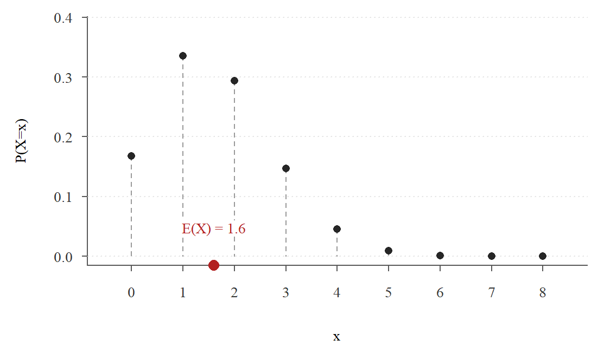
e) Birikimli dağılım fonksiyonunu bulun ve grafiğini çizin.
Şekil 8.16 birikimli dağılım fonksiyonunu göstermektedir.
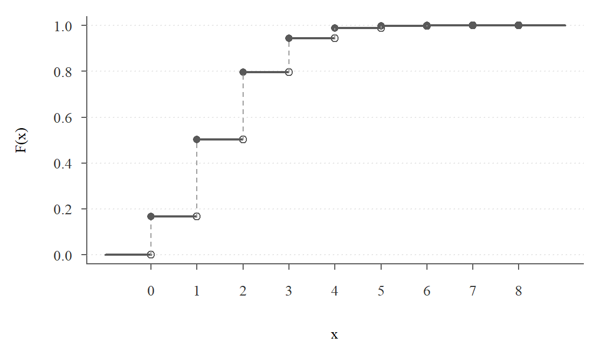
Alıştırma 8.7 Emlakçı örneğinde (bkz. Alıştırma 8.6) 8 görüşmedeki satış sayısı \(Binom(8,~0.2)\) dağılımına uyuyordu. rbinom() fonksiyonuyla 10000 emlakçının 8’er görüşmesini simüle ediniz. Satış sayılarının göreli sıklıklarını olasılık kütle fonksiyonuyla, ortalamasını ve varyansını da beklenen değer ve varyansla karşılaştırınız.
Çözüm:
set.seed(2025)
satis <- rbinom(10000, size = 8, prob = 0.2)
head(satis, 10) # ilk 10 emlakçının satış sayıları [1] 2 1 2 1 2 2 3 0 2 2siklik <- table(factor(satis, levels = 0:8)) / 10000
round(rbind(goreli_siklik = siklik, olasilik = dbinom(0:8, size = 8, prob = 0.2)), 3) 0 1 2 3 4 5 6 7 8
goreli_siklik 0.164 0.340 0.292 0.147 0.046 0.009 0.001 0 0
olasilik 0.168 0.336 0.294 0.147 0.046 0.009 0.001 0 0c(ortalama = mean(satis), beklenen_deger = 8 * 0.2,
varyans = var(satis), teorik_varyans = 8 * 0.2 * 0.8) ortalama beklenen_deger varyans teorik_varyans
1.605600 1.600000 1.283777 1.280000 plot_pmf(0:8, dbinom(0:8, size = 8, prob = 0.2))
points(0:8, siklik, pch = 4, cex = 1.3, col = "firebrick")
legend("topright", bty = "n", pch = c(16, 4), col = c("gray15", "firebrick"),
legend = c("Olasılık", "Göreli sıklık"))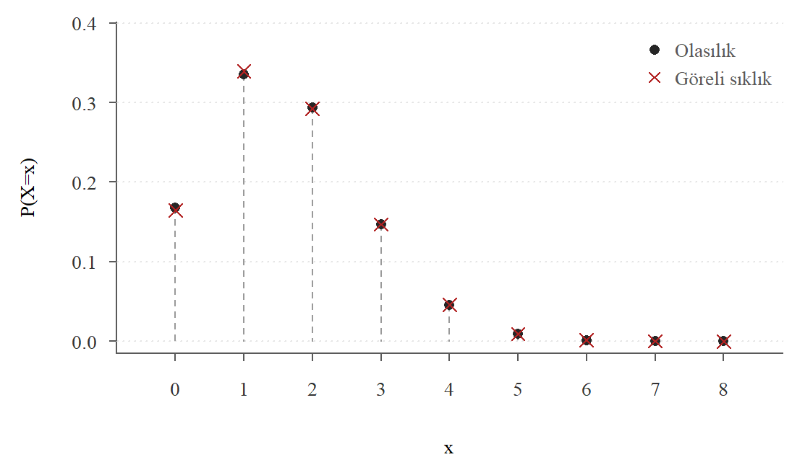
Göreli sıklıklar olasılıklarla neredeyse çakışmaktadır (Şekil 8.17). 10000 emlakçının satış sayılarının ortalaması 1.606, beklenen değer ise \(8\times 0.2=1.6\)’dır. Beklenen değer, deney çok sayıda tekrarlandığında sonuçların ortalamasının yaklaştığı değer olarak yorumlanabilir. Bu, Olasılık bölümünde gördüğümüz göreli sıklık yaklaşımının beklenen değer için karşılığıdır (bkz. Bölüm 7). Simülasyonu farklı bir set.seed() değeriyle tekrarlarsanız sonuçların biraz değiştiğini, ama olasılıklara yakın kaldığını görürsünüz.
Alıştırma 8.8 Bir şirket 20 üründen oluşan bir sevkiyat alıyor. Rassal olarak 6 ürün seçiliyor ve bu örneklemde herhangi bir ürün kusurlu çıkarsa sevkiyat reddediliyor.
- 5 kusurlu ürün içeren bir sevkiyatın kabul edilme olasılığı nedir?
- 2 kusurlu ürün içeren bir sevkiyatın kabul edilme olasılığı nedir?
- 2 kusurlu ürün içeren bir sevkiyatın reddedilme olasılığı nedir?
Çözüm:
a) 5 kusurlu ürün içeren bir sevkiyatın kabul edilme olasılığı nedir?
Kusurlu ürün sayısı \(X\) hipergeometrik dağılıma uyar: \[ N=20,\quad n=6,\quad B=5 \] Olasılık kütle fonksiyonu: \[ \P(X=x) = \frac{\binom{B}{x} \binom{N-B}{n-x}}{\binom{N}{n}} \] Hiç kusurlu ürün olmaması olasılığı: \[ \P(X=0) = \frac{\binom{5}{0} \binom{15}{6}}{\binom{20}{6}}=0.129 \] b) 2 kusurlu ürün içeren bir sevkiyatın kabul edilme olasılığı nedir?
Kusurlu ürün sayısı \(X\) hipergeometrik dağılıma uyar: \[ N=20,\quad n=6,\quad B=2 \] Hiç kusurlu ürün olmaması olasılığı: \[ \P(X=0) = \frac{\binom{2}{0} \binom{18}{6}}{\binom{20}{6}}=0.479 \] Kabul olasılığı yaklaşık %48’dir.
c) 2 kusurlu ürün içeren bir sevkiyatın reddedilme olasılığı nedir?
Önceki kısımda kabul olasılığını bulmuştuk. Öyleyse reddedilme olasılığı \[ \P(\mbox{Sevkiyat Red}) = 1-\P(X=0) = 1-0.48\approx 0.52 \] yaklaşık %52’dir.
Alıştırma 8.9 Bir madeni para Tura gelinceye kadar atılıyor.
- İlk Tura’nın beşinci atışta gelme olasılığı kaçtır?
- \(X\) ilk Tura’nın geldiği atışın sırasını göstersin. \(\P(X=x)\), \(x=1,2,\ldots\) olasılıklarını veren bir fonksiyon türetiniz.
Çözüm:
Hilesiz bir para atıldığına göre Tura ve Yazı olasılıkları eşittir, \(p=0.5\). İlk Tura’nın beşinci atışta gelmesi için ilk dört atışın hepsinin Yazı olması gerekir. Öyleyse \[ \P(X=5) = (1-p)^4\cdot p = 0.03125 \] bulunur.
\(X\) ilk Tura’nın geldiği atışın sırası olduğuna göre
- \(X=1\) olma olasılığı \(\P(X=1)=p=0.5\)
- \(X=2\) olma olasılığı \(\P(X=2)=(1-p)\cdot p=0.5^2=0.25\)
- \(X=3\) olma olasılığı \(\P(X=3)=(1-p)^2\cdot p=0.5^3=0.125\)
Diğer olasılıklar da benzer şekilde tanımlanabilir. Genel olarak her denemede başarı (Tura) olasılığı \(p\) ise \[ f(x) = \P(X=x) = (1-p)^{x-1}\cdot p, \quad x=1,2,3,\ldots \] yazabiliriz. Buna geometrik dağılım denir. Geometrik dağılım her denemede bağımsız olarak aynı olasılıkla gerçekleşen bir olayın \(x\). denemede ilk kez gerçekleşme olasılığını ifade eder. Bu nedenle, geometrik dağılım, bir olayın ilk kez gerçekleşeceği süreyi modelleyen dağılımlardan biridir. Şekil 8.18 başarı olasılığı \(p=0.30\) olan bir geometrik dağılımın olasılık kütle fonksiyonunu göstermektedir.
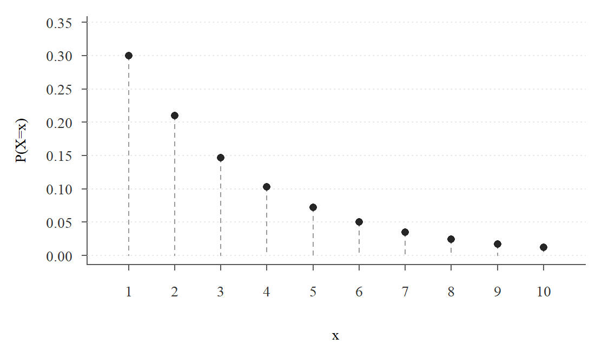
Geometrik dağılım, \(X\) ilk başarıya kadar başarısız geçen deneme sayısını temsil edecek şekilde de tanımlanabilir: \[ f(x) = \P(X=x) = (1-p)^{x}\cdot p, \quad x=0,1,2,3,\ldots \] Bu versiyonda \(X=0\), başarıyı ilk denemede elde ettiğiniz anlamına gelir (yani, başarısızlık olmadan başarı gelir). Eğer deney, “başarısız deneme sayısı” odaklı olarak değerlendiriliyorsa bu tanımlama kullanılabilir.
Alıştırma 8.10 Önceki alıştırmada elde ettiğiniz geometrik dağılımın gerçekten de olasılık dağılımı olma koşullarını sağladığını gösteriniz.
Çözüm:
Bunun için \[ f(x)\geq 0 \] ve \[ \sum_x f(x) = 1 \] olmalıdır. Geometrik olasılık dağılımı \[ f(x) = \P(X=x) = (1-p)^{x-1}\cdot p, \quad x=1,2,3,\ldots \] ve \(0< p \leq 1\) olduğuna göre \(f(x)\geq 0\) her zaman sağlanır.
\[ \sum_{x=1}^\infty (1-p)^{x-1}\cdot p = 1 \] olup olmadığını gösterelim. Burada \(p\) sabit olduğu için toplam dışına alınabilir: \[ p\sum_{x=1}^\infty (1-p)^{x-1} =p \sum_{k=0}^\infty r^{k} \] Burada \(k=x-1\) ve \(r=1-p\) olarak tanımlıdır. \(0<p\leq 1\) olduğundan \(0\leq r<1\) olur; bu yüzden \(k\) artarken \(r^k\) küçülür ve limitte \[ \sum_{k=0}^\infty r^{k} = 1+ r + r^2 +r^3+r^4+\ldots = \frac{1}{1-r} = \frac{1}{p} \] değerine yakınsar. Buna geometrik seri denir. Şekil 8.19 \(r=0.8\) için geometrik serinin yakınsamasını göstermektedir. Örneğin, \(r=0.8=1-p\) ise seri \(1/0.2 = 5\) değerine yakınsar.
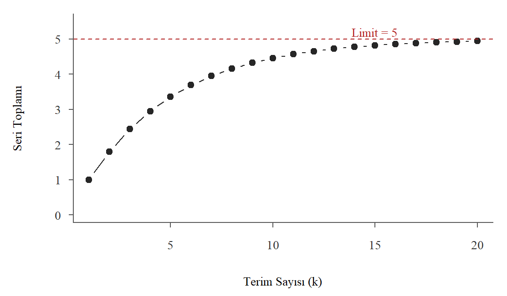
Sonuç olarak, geometrik serinin özelliklerinden hareketle \[ p \sum_{x=1}^\infty (1-p)^{x-1} = p\cdot \frac{1}{p} = 1 \] olur.
8.7 Problemler
Problem 8.1 Standart altı yüzlü 3 zar atılıyor. Örneklem uzayı kaç elemandan oluşur? \(X\) bu üç zarın toplamını göstersin. \(X\)’in olasılık kütle fonksiyonunu bulunuz.
Problem 8.2 Bir markanın ithal edilen 10 otomobilinden 3’ünün boyasında çizikler olduğu bilinmektedir. Bir bayi bu otomobillerden 3’ünü almıştır. Otomobilde çizik olduğu durumu “V” harfi ile, olmadığı durumu “Y” harfi ile gösterelim. Örneklem uzayı S’yi oluşturun. \(X\) rassal değişkeni bayinin aldığı otomobillerden çizikli olanların sayısını göstersin. Örneklem uzayındaki sonuçlarla \(X\)’in alabileceği değerleri ilişkilendirin.
Problem 8.3 Aşağıda verilen fonksiyonu düşünelim: \[ f(x) = c(x^2+6),\quad x=-1,0,1 \]
- \(f(x)\)’in bir olasılık kütle fonksiyonu olabilmesi için \(c\) kaç olmalıdır?
- \(f(x)\)’in grafiğini çizin.
- Beklenen değer ve varyansını bulun.
- Birikimli dağılım fonksiyonu \(F(x)\)’i bulun ve grafiğini çizin.
Problem 8.4 Hilesiz bir madeni para 3 kez atılıyor. X rassal değişkeni Yazı sayısı ile Tura sayısı arasındaki fark, yani Yazı sayısı eksi Tura sayısı, olarak tanımlanıyor.
- Örneklem uzayını oluşturun.
- \(X\)’in olasılık kütle fonksiyonunu bulun.
Problem 8.5 Bir madeni paranın Tura gelme olasılığı Yazı gelme olasılığının 2 katı olacak şekilde ayarlanıyor. Hileli para 3 kez atılıyor ve X rassal değişkeni Tura sayısı olarak tanımlanıyor.
- Örneklem uzayını oluşturun.
- \(X\)’in olasılık kütle fonksiyonunu bulun.
Problem 8.6 8 üründen oluşan bir parti yedek parça içinde 2’si hatalıdır. Bir fabrika bu yedek parçalardan 3’ünü rassal biçimde satın alıyor. X hatalı ürün sayısı olmak üzere olasılık kütle fonksiyonunu bulun.
Problem 8.7 Bir torbada 4 Kırmızı ve 2 Sarı top bulunmaktadır. Yerine koyarak 3 top rassal seçiliyor. X sarı topların sayısını göstersin. X’in olasılık kütle fonksiyonunu ve birikimli dağılım fonksiyonunu bulun.
Problem 8.8 Büyük bir istatistik sınıfındaki öğrencilere “Yapay zekanın yakın gelecekte iş bulmayı zorlaştıracağını düşünüyorum” ifadesini 1 (kesinlikle katılmıyorum) ile 5 (kesinlikle katılıyorum) arasında değerlendirmeleri istenmiştir. Aşağıdaki tablo değerlemeleri özetlemektedir: \[ \begin{array}{c|ccccc} \mbox{Değerleme} & 1 & 2 & 3 & 4 & 5\\ \hline \mbox{Oran} & 0.10 & 0.10 & 0.40 & 0.3 & 0.1 \\ \end{array} \]
- Bu olasılık kütle fonksiyonunun grafiğini çizin.
- Birikimli dağılım fonksiyonunu bulun ve grafiğini çizin.
- Rassal seçilen bir öğrencinin değerlemesinin 3 veya daha fazla olma olasılığı kaçtır?
- Rassal seçilen bir öğrencinin değerlemesinin 2’den büyük ve 5’ten küçük olma olasılığı kaçtır?
- Değerlendirmelerin ortalamasını bulun.
- Değerlendirmelerin standart sapmasını bulun.
Problem 8.9 Bir fabrika, ürettiği her bir üründe sabit 500 TL maliyete sahiptir. Her bir gün için 200 TL ek maliyet tahmin edilmektedir. Toplam üretim maliyeti şu şekilde ifade edilmektedir: \[ Y=500 + 200X \] Ürün başına üretim süresi \(X\)’in (gün cinsinden) dağılımı şu şekildedir: \[ \begin{array}{c|ccccc} x & 1 & 2 & 3 & 4 & 5\\ \hline f(x)=\P(X=x) & 0.2 & 0.3 & 0.25 & 0.15 & 0.1 \\ \end{array} \] Üretim maliyetinin beklenen değer ve varyansını bulun.
Problem 8.10 eticaret.RData verisinde sepetteki ürün sayısını (urun_sayisi) inceleyiniz. Rassal seçilen bir siparişte sepetteki ürün sayısı \(X\) olsun.
- \(X\)’in olasılık kütle fonksiyonunu ve birikimli dağılım fonksiyonunu bulunuz ve grafiklerini çiziniz.
- \(X\)’in beklenen değerini ve varyansını hesaplayınız.
- Her sepette en az bir ürün bulunduğu için \(Y=X-1\), yani sepetteki ek ürün sayısı, \(0,1,2,\ldots\) değerlerini alır. Poisson dağılımında beklenen değer ile varyansın eşit olduğunu hatırlayarak \(Y\)’nin Poisson dağılımına uygun olup olmadığını tartışınız.
- Aynı hesabı yalnızca kozmetik kategorisindeki siparişler için yapınız. Sonuç neden değişiyor?
Problem 8.11 \(X\) rassal değişkeni başarı olasılığı \(p=0.6\) ve \(n=20\) olan bir Binom dağılımına uymaktadır. a) Başarı sayısı \(X\)’in 12 olma olasılığı kaçtır? a) En az 10 başarı olasılığı kaçtır? a) \(X\)’in beklenen değerini bulun. a) \(X\)’in varyansını bulun.
Problem 8.12 Bir havayolu şirketi rezervasyon yaptıran yolcuların yüzde 90’ının uçuşa geldiğini bilmektedir. Şirket 120 koltuklu bir uçuş için 130 bilet satmıştır. Uçuşa gelen yolcu sayısının koltuk sayısını aşma, yani uçuşun fazla rezervasyonlu (overbook) çıkma olasılığı kaçtır?
Problem 8.13 Bir karayolunun belirli bir kesiminde son bir hafta içinde 256 sürücüye ceza kesilmiştir. Ceza tutarı 1500 TL’dir. Tüm ceza kesilen sürücülerin %85’inin bu cezayı ödedikleri bilinmektedir. Sürücülerin cezayı ödeyip ödememesinin birbirinden bağımsız olduğunu varsayarak toplam ceza gelirinin beklenen değerini ve standart sapmasını bulun.
Problem 8.14 Çoktan seçmeli bir sınavda 20 soru vardır. Her soru 5 şık içermektedir. Bir öğrenci sınava çalışmadığı için soruları rassal olarak cevaplamaya karar vermiştir.
- X doğru cevap sayısını göstersin. X’in beklenen değerini bulun.
- X’in standart sapmasını bulun.
- Her sorunun puan değerinin 5 olduğunu ve yanlış cevaplar için puan kırılmadığını düşünelim. Ayrıca adını doğru yazana ekstra 5 puan verilmektedir. Bu öğrenci için beklenen puan kaçtır?
- Toplam puanın standart sapmasını bulun.
Problem 8.15 Önceki soruda doğru cevaplara 5 puan verildiğini ancak her yanlış cevap için 1 puan kırıldığını düşünelim. Boş cevaplara 0 puan verilsin.
- Soruları rassal işaretleyen ve hiç boş soru bırakmayan bir öğrencinin beklenen puanı kaçtır?
- Öğrenci 5 soruyu boş bırakır ve diğerlerini rassal olarak yanıtlarsa beklenen puanı kaç olur?
Problem 8.16 \(N=50\) birimden oluşan bir anakütleden \(n=18\) gözlemlik rassal örneklem çekilmiştir. Anakütledeki başarı sayısı 20 ise örneklemde 5 başarı olma olasılığı kaçtır?
Problem 8.17 Bir firmaya 20 üründen oluşan bir parti mal gelmiştir. Satın alma sorumlusu bu ürünlerden 5’ini rassal olarak seçerek kontrol ediyor. Eğer hatalı ürün sayısı 1 veya daha fazla olursa ürünler reddediliyor.
- Bu 20 ürün içinde hatalı sayısı 4 ise, malların kabul edilme olasılığı kaçtır?
- Bu 20 ürün içinde hatalı sayısı 2 ise, malların red olasılığı kaçtır?
Problem 8.18 \(X\) rassal değişkeni ortalaması 8 olan bir Poisson dağılımına uymaktadır: \(X\sim~Poisson(\lambda=8)\).
- \(X=0\) olasılığı kaçtır?
- 4 veya daha az olay gerçekleşme olasılığı kaçtır?
- \(X\)’in beklenen değer ve varyansını bulun.
Problem 8.19 Bir kahve dükkanına dakikada ortalama 2 müşteri gelmektedir. Dakikada gelen müşteri sayısı Poisson dağılımına uyuyorsa, müşteri sayısının 4’ten fazla olma olasılığı kaçtır?
Problem 8.20 Bir fabrikada bir ayda meydana gelen kaza sayısı ortalaması 3 olan bir Poisson dağılımına uymaktadır. Buna göre
- Hiç kaza olmama olasılığı kaçtır?
- Bir kaza olma olasılığı kaçtır?
- 2’den fazla kaza olma olasılığı kaçtır?
Problem 8.21 Bir sigorta şirketinin 2000 konut poliçesi vardır. Bir yıl içinde her poliçede hasar gerçekleşme olasılığı 0.001’dir ve poliçeler birbirinden bağımsızdır.
- Bir yılda hasar gerçekleşen poliçe sayısı \(X\) hangi dağılıma uyar? \(X\)’in beklenen değerini ve varyansını bulun.
- Tam olarak 3 hasar gerçekleşme olasılığını binom dağılımıyla hesaplayın.
- Aynı olasılığı Poisson yaklaşımıyla hesaplayın ve (b) şıkkındaki sonuçla karşılaştırın.
- Poliçelerin birbirinden bağımsız olması varsayımı hangi durumlarda bozulur? Örneğin poliçelerin hepsi aynı deprem bölgesindeyse bu dağılımlarla yapılan hesaplar neden yanıltıcı olabilir?
Problem 8.22 Geometrik dağılımın, \(X\sim~Geometrik(p)\), beklenen değerinin \[ \E(X) = \frac{1}{p} \] olduğunu gösteriniz. İpucu: \(0\leq r<1\) için geometrik serinin (bkz. Alıştırma 8.10) terim terim türevi alınarak \(\sum_{k=1}^\infty k\,r^{k-1} = 1/(1-r)^2\) elde edilir.